EvoSkill v2
ทั้งเรื่องในภาพเดียว: Evolver ที่เห็นเฉลยได้ 83.3% ถึง 93.3% บน Test Set · เห็นแต่คะแนนได้ 56.7% ถึง 70.0%
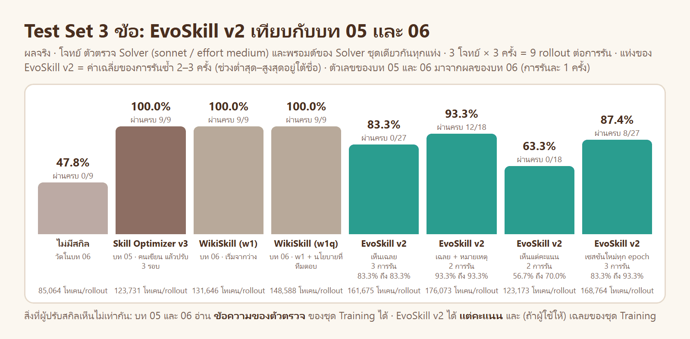
ผลจริงจาก 12 การรันของบทนี้ เทียบกับ Skill Optimizer (บท 05) และ WikiSkill (บท 06) บนโจทย์ชุดเดียวกัน · ที่มาของแต่ละแท่งอยู่ในภาค LAB และส่วนที่ 4
EvoSkill v2 ใน 4 ขั้น: ก่อนการรัน adapt → epoch 0 base → epoch K turn → rollout → หลังการรัน test
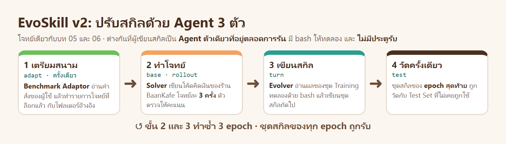
epoch K: Evolver เขียน skills_vK → Solver ทำ Validation และ Training ด้วยชุดนั้น · รับทุกชุด
ขั้น epoch K ทำซ้ำทุก epoch · ที่มาของแต่ละขั้นอยู่ในภาคทฤษฎี ส่วนที่ 2
บทนี้แบ่งเป็น 2 ภาค 4 ส่วน
01_theory/README.md · รายละเอียดเต็มของทุกหัวข้ออยู่ใน README.mdวิธีใช้สไลด์นี้
ไปหน้าถัดไป / ก่อนหน้า
→ Space / ← หรือปุ่มมุมขวาล่าง
สารบัญทุกหน้า
O แล้วคลิกหน้าที่ต้องการ · F เต็มจอ
ขยายภาพ
คลิกที่ภาพ · คลิกอีกครั้งหรือ Esc เพื่อปิด
คัดลอกพรอมต์ของ LAB
ปุ่ม คัดลอกพรอมต์ทั้งหมด ให้ข้อความเดียวกับ README.md ตรงตัวอักษร แม้พรอมต์ถูกแบ่งแสดง 2 หน้า
ตรวจผลหลังรัน
สไลด์ ตรวจผลของคุณ ต่อจากพรอมต์ทุก LAB · ติ๊กได้ และจำค่าไว้ในเบราว์เซอร์นี้
เปิดไฟล์จริง
ลิงก์สีน้ำเงินเปิดไฟล์ในโฟลเดอร์ของบท · เปิดสไลด์จากโฟลเดอร์ 07_EvoSkill_v2
โจทย์ (ฉบับย่อ) และ EvoSkill v2
ภาคนี้อ่านอย่างเดียว ไม่ต้องรันอะไร และไม่ใช้โทเคน
- ส่วนที่ 1 ทบทวนโจทย์ของบท 05 และ 06 สั้น ๆ · ส่วนที่ 2 อธิบาย EvoSkill v2
- ตัวเลขที่กำกับว่า "ตัวอย่างจากผล LAB" ยกมาจากการรันจริงใน ภาค LAB เพื่อประกอบคำอธิบายเท่านั้น
โจทย์ (ฉบับย่อ)
โจทย์เดิมของบท 05 และ 06 คืออะไร · บทนี้เปลี่ยนอะไร
โจทย์เดิมของบท 05: Agent ไม่ได้รับความรู้แฝงของทีม แต่ตัวตรวจรู้ครบ

บทนี้ใช้ โจทย์ ตัวตรวจ และกติกาชุดเดียวกับบท 05 และ 06 จึงทบทวนแค่ภาพเดียว · คำอธิบายเต็มอยู่ที่ บท 05 ส่วนที่ 1
ชุดโจทย์ 9 ข้อ: Training 4 · Validation 2 · Test 3โจทย์เดิมของบท 05 และ 06
Training 4 ข้อ
t1 บิลหน้าร้าน · t2 หารบิล · t3 ค่าส่ง · t4 เงินคืน
ให้ผู้ปรับสกิลเรียนรู้ · t3 และ t4 มีนโยบายธุรกิจที่โจทย์ไม่ได้เขียน
Validation 2 ข้อ
v1 ค่าจอดรถ · v2 ค่าแรง
ดูคะแนนของแต่ละ epoch
สิ่งที่บทนี้เปลี่ยนจากบท 05 และ 06
สิ่งที่ไม่เปลี่ยน: โจทย์ ตัวตรวจ และ Solver
เหมือนสองบทก่อนทุกค่า ผลจึงเทียบกันได้
โจทย์ ตัวตรวจ พรอมต์ของ Solver โมเดลของ Solver (sonnet · effort medium) และจำนวนครั้งต่อโจทย์ (3)
คำถามใหม่ของบทนี้
นโยบายธุรกิจ 4 ข้อไม่อยู่ในโจทย์ แต่ อยู่ในเฉลยอ้างอิงของงานค่าส่งและงานเงินคืน
Evolver ที่ได้เห็นเฉลยจะพบหรือไม่ และจะเขียนลงสกิลอย่างไร (ในบท 06 ไม่มีใครเห็นเฉลย WikiSkill จึงหาไม่ได้)
EvoSkill v2
EvoSkill v2 คืออะไร · ทำงานอย่างไร · นำมาใช้กับโจทย์นี้อย่างไร
ข้อสังเกตตั้งต้น: พลาดซ้ำ = ขาดคำแนะนำ ไม่ใช่ขาดความสามารถ

Agent ที่ไม่มีสกิล เมื่อพลาดโจทย์ มักพลาดโจทย์นั้นอีกเมื่อทำซ้ำ = ขาดคำแนะนำ ไม่ใช่ขาดความสามารถ · คำแนะนำเป็นภาษาธรรมชาติ Agent อีกตัวจึงเขียนให้ได้
EvoSkill v2 คือ Agent 3 ตัว

reference/ จากนั้นโปรแกรมล็อกด้วย hash · 1 ครั้ง ก่อนเริ่มสถาปัตยกรรม: เตรียมครั้งเดียวก่อนการรัน · วนทุก epoch · วัด Test Set หลังการรัน
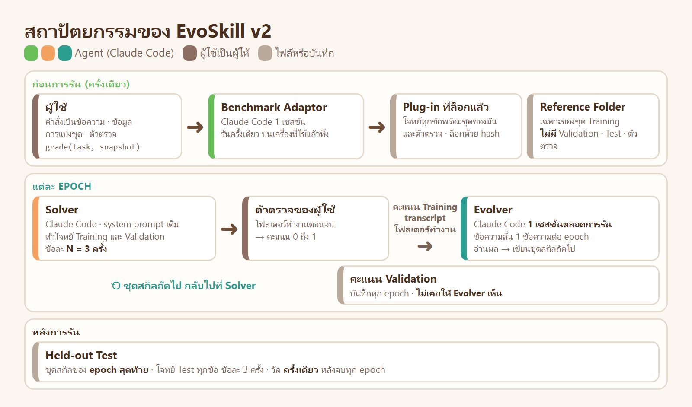
ชุดสกิลถัดไปกลับไปที่ Solver ทุก epoch · คำอธิบายเต็มของแต่ละกล่อง: ทฤษฎี
ผู้ใช้ส่ง 3 อย่าง: คำสั่ง ข้อมูล ตัวตรวจ
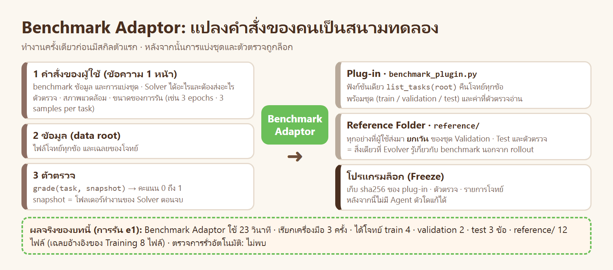
bench/)instruction.md: benchmark และข้อมูลอยู่ที่ไหน · Solver ได้อะไร · ตัวตรวจคืออะไร · Evolver เห็นอะไรได้ · ขนาดของการรัน 3 epochs · 3 samples per taskdata/baankafe/: tasks/ โจทย์ 9 ข้อ · answers/ เฉลยอ้างอิงของทุกข้อ · การแบ่งชุดอยู่ใน split.jsonbenchmark_grader.py: grade(task, snapshot) คืนคะแนน 0 ถึง 1ใครเห็นอะไร: Evolver ไม่เห็น Validation · Test และตัวตรวจ ได้แต่คะแนน
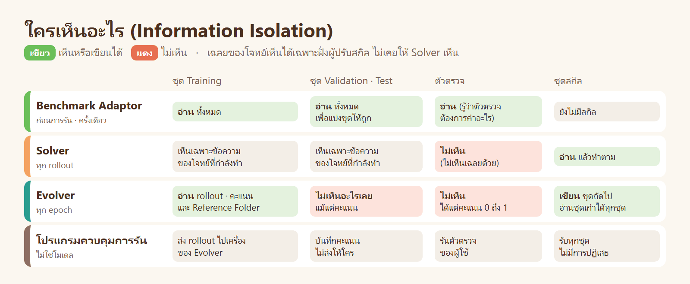
อ่านทีละแถว: Benchmark Adaptor · Solver · Evolver · โปรแกรมควบคุมการรัน
เครื่องของ Evolver: เห็นอะไร แก้อะไรได้

การกันข้อมูลทำโดย โปรแกรมควบคุมการรัน ไม่ใช่ด้วยการขอร้องใน prompt: Evolver ทำงานในเครื่องที่มีเฉพาะของชุด Training · ไม่เห็นโจทย์และคะแนนของ Validation กับ Test · ไม่เห็นตัวตรวจ เห็นแค่คะแนน
อัลกอริทึม: ไม่มีบรรทัด "ถ้าคะแนนดีขึ้นจึงรับ"

ขั้นของเครื่องมือ: ก่อนการรัน adapt · epoch 0 base · epoch K turn → rollout · หลังการรัน test · LAB 1 และ LAB 2 รันคำสั่งเหล่านี้ทีละขั้น
การตัดสินใจออกแบบ 4 ข้อของ Evolver

เหตุผลของแต่ละข้อ พร้อมหลักฐานจากเปเปอร์: ทฤษฎี ขั้น 11
ข้อที่ 4 คือจุดที่ต่างจากสองบทก่อนมากที่สุด: ไม่มีประตูรับ
skills_vK → Solver ทำ Validation และ Training ด้วยชุดนั้น · รับทุกชุดนำมาใช้กับโจทย์นี้: เหมือนเปเปอร์ทุกขั้น ต่างที่ขนาดงานและวิธีแยกเครื่องข้อ 2.7
ขนาดของการรัน
เปเปอร์: หลาย epoch · 3 ครั้งต่อโจทย์
บทนี้: 3 epochs · 3 ครั้งต่อโจทย์ = 78 rollout
Solver
เปเปอร์: Claude Code + Sonnet 5.5 หรือ Haiku 5.5 · สกิลแบบ Progressive Disclosure
บทนี้: sonnet (effort medium) เท่ากับบท 05 และ 06 · สกิลวางใน ./skills พรอมต์บอกให้อ่านก่อนเริ่ม
Evolver และ Benchmark Adaptor
เปเปอร์: Claude Code 1 เซสชัน · prompt ของเปเปอร์
บทนี้: Claude Code 1 เซสชัน · sonnet (effort high) · prompt ภาษาไทยที่เขียนใหม่ใน LAB 0
การแยกเครื่อง
เปเปอร์: เครื่องแยกของแต่ละ Agent · ปิดเครือข่าย
บทนี้: mount namespace ใน container เดียว (Evolver เห็นเฉพาะ /evo) · ไม่ได้ปิดเครือข่าย
ความรู้แฝงเฉพาะงาน (นโยบายธุรกิจ)
เปเปอร์: ไม่มี
บทนี้: อยู่ในเฉลยของ Training 2 ข้อ · ไม่มีข้อตรวจใน Validation
README.md ข้อ 2.7คำถาม 7 ข้อที่ภาค LAB จะตอบ
1LAB 1 · 2
เริ่มจากไม่มีสกิล Evolver ที่เห็นแค่คะแนนกับเฉลยของ Training เขียนสกิลที่ใช้ได้หรือไม่
2LAB 2
นโยบายธุรกิจ 4 ข้อที่ไม่มีใครบอก Evolver ค้นพบจากเฉลยได้หรือไม่ และเขียนลงสกิลอย่างไร
3LAB 3
กฎที่อยู่เฉพาะในตัวตรวจ ผู้ใช้บอก Evolver ได้ทางใด
4LAB 4
ถ้า Evolver ไม่ได้เห็นเฉลย เหลือแค่คะแนน ผลต่างกันอย่างไร
5LAB 5
ถ้าตัดความจำของเซสชันออก ผลต่างกันอย่างไร
6LAB 6
โมเดลเล็กปรับสกิลของตัวเองได้หรือไม่
7LAB 7
ทำไมเปเปอร์ไม่ใช้ประตูรับ และการไม่มีประตูรับมีราคาเท่าไร
ลงมือทำ 8 ขั้น · สรุป · แบบฝึกหัด
ภาคนี้ลงมือทำ: คัดลอกพรอมต์ → วางใน Claude Code → อ่านผล
ผลจริงทุกตัวในภาคนี้มาจากการรันเมื่อ 15 พ.ย. 2026 ด้วยเครื่องมือที่สร้างจากพรอมต์ของ LAB 0 · Solver sonnet · effort medium · ผลดิบอยู่ใน runs/
ภาค LAB: ลงมือทำ 8 ขั้น
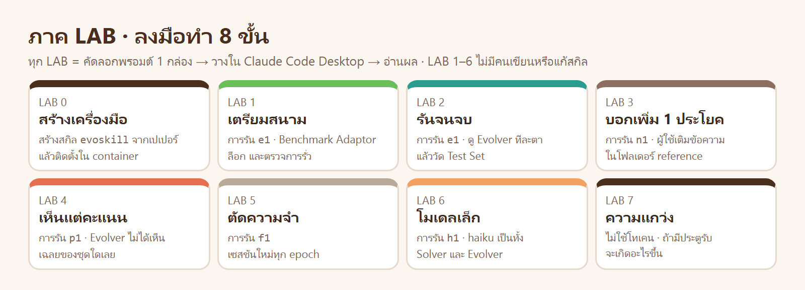
LAB 0 สร้างเครื่องมือ · LAB 1 เตรียมสนาม · LAB 2 รันจนจบ · LAB 3–6 เปลี่ยนทีละอย่าง · LAB 7 ความแกว่ง (ไม่ใช้โทเคน)
วิธีทำ LAB ทุกขั้น
ก่อนเริ่ม LAB
วิธีใช้
เปิดโฟลเดอร์ Teaching ใน Claude Code Desktop → คัดลอกกล่อง IMPORTANT → วาง → รอผล
ต้องมี
container multi-account · บัญชี yolo ที่ล็อกอินแล้วอย่างน้อย 1 บัญชี · สกิล skill-optimizer ที่สร้างใน บท 05 LAB 0
ผลจริงในสไลด์
ผลจริงทุกตัวในภาคนี้มาจากการรันเมื่อ 15 พ.ย. 2026 ด้วยเครื่องมือที่สร้างจากพรอมต์ของ LAB 0 · Solver sonnet · effort medium · ผลดิบอยู่ใน runs/
ข้อมูล 9 ข้อ แบ่งเป็น 3 ชุด: Evolver เห็นเฉพาะ Trainingแผนการทดลอง
Training Set 4 ข้อ
t1 บิลหน้าร้าน · t2 หารบิล · t3 ค่าส่ง · t4 เงินคืน → Evolver เห็น rollout คะแนน และ (ถ้าคำสั่งอนุญาต) เฉลย
Validation Set 2 ข้อ
v1 ค่าจอดรถ · v2 ค่าแรง → ดูคะแนนของแต่ละ epoch · Evolver ไม่เห็นอะไรของชุดนี้
Test Set 3 ข้อ
x1 ค่าปรับ · x2 คืนเงินคอร์ส · x3 ราคาขายส่ง → วัดตอนจบครั้งเดียว
bench/: คำสั่ง 1 หน้า · โจทย์ 9 ข้อและเฉลยอ้างอิง · ตัวตรวจ (ชุดเดียวกับบท 05 และ 06)1 การรัน = 78 rollout: นับอย่างไร และใช้โมเดลใดแผนการทดลอง
1 rollout
Solver 1 ตัว + โจทย์ 1 ข้อ + ชุดสกิล 1 ชุด → ได้ solve.py และ test_solve.py (บทก่อนเรียกว่า Trial)
การให้คะแนน 1 rollout
ตัวตรวจสรุปเป็นข้อตรวจ 10 ข้อ (งาน t3 มี 11 ข้อ) · คะแนน = สัดส่วนข้อที่ผ่าน · ผ่าน = ครบทุกข้อ
1 การรัน
3 epochs · โจทย์ละ 3 ครั้ง = 78 rollout (epoch 0: 27 · epoch 1 และ 2: ชุดละ 18 · epoch 3: 6 · Test: 9) + Evolver 3 ตา + Benchmark Adaptor 1 ครั้ง
โมเดล
Solver: sonnet effort medium · Evolver และ Benchmark Adaptor: sonnet effort high (ยกเว้น LAB 6)
โครงสร้างโฟลเดอร์: 1 การรัน = 1 โฟลเดอร์ใน runs/
07_EvoSkill_v2/
├── README.md บทเรียนนี้
├── EvoSkill_v2_Slides.html สไลด์ของบทนี้ (สร้างด้วย tools/build_slides.py)
├── evoskill_format.md รูปแบบที่เครื่องมือ evoskill ต้องทำตาม
├── bench/ สิ่งที่ผู้ใช้ส่ง: คำสั่ง 3 แบบ · split.json · ตัวตรวจ · data/baankafe (โจทย์ 9 ข้อและเฉลย)
├── runs/ ผลลัพธ์
│ └── e1/ 1 การรัน (LAB 1–2) · n1 p1 f1 h1 และการรันซ้ำ โครงเดียวกัน
│ ├── setup/ รายการโจทย์ที่ถูกล็อก: benchmark_plugin.py · tasks.json · freeze.json · audit.md
│ ├── reference/ สิ่งที่ Evolver อ่านได้เกี่ยวกับ benchmark
│ ├── skills_v1/ skills_v2/ skills_v3/ ชุดสกิลหลังแต่ละตาของ Evolver
│ ├── turns/ สิ่งที่ Agent ได้รับและทำ: adaptor/ · turn_1/ turn_2/ turn_3/ (message.md · actions.md · stats.json)
│ ├── evo/ โฟลเดอร์ส่วนตัวของ Evolver (evolver_workspace/) และคะแนนที่มันเห็น (scores/)
│ ├── legs/ ผลของทุก rollout แยกตาม leg (base_train · v1_val · … · v3_test)
│ └── state.json status.txt noise.txt
├── tools/ สคริปต์วาดกราฟและแผนภาพจาก runs/
└── 01_theory/ ทฤษฎีจากเปเปอร์ EvoSkill v2Teaching/my-evoskill/ → ติดตั้งใน container เป็น global skill ชื่อ evoskill · ที่ทำงานใน container: /workspace/evlab/ มี bench/ และ runs/ โครงเดียวกับข้างบน · สกิลที่ Evolver เขียน: อยู่ใน runs/<ชื่อ>/skills_vK/ เท่านั้น ห้ามเป็น global skillเตรียมเครื่องมือและโจทย์
สร้างเครื่องมือ evoskill แล้วติดตั้งใน container พร้อมโจทย์
LAB 0 ทำอะไร
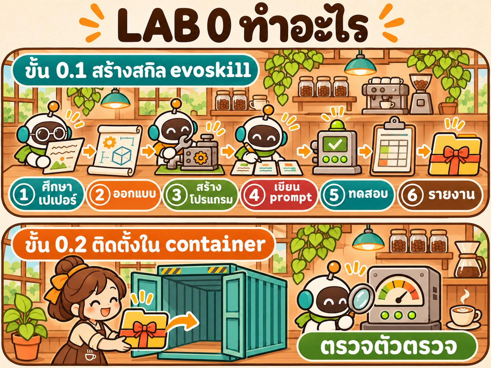
references/source.mdscripts/evoskill.py 12 คำสั่ง พร้อม plugin_api.py และ plugin_skeleton.pyprompts/ 3 ไฟล์ · SKILL.md · references/workspace.mdmy-evoskill เป็น global skill evoskill · คัดลอก bench ไป /workspace/evlab/benchbench/check_grader.py · ดูว่าบัญชี yolo ใดล็อกอินแล้วขั้น 0.1 · สร้างสกิล evoskill ใน 6 ขั้น
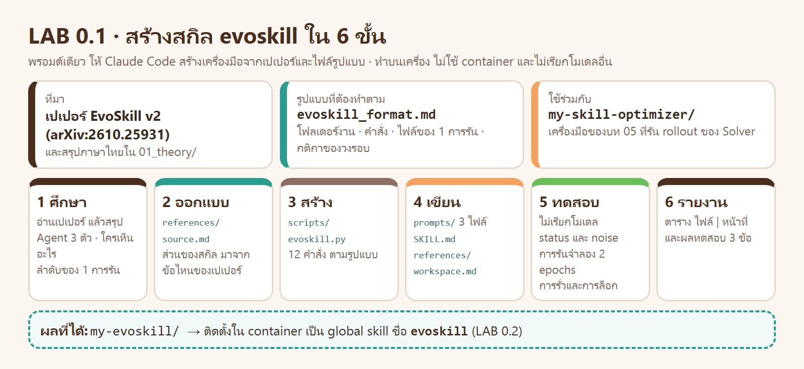
ทำบนเครื่อง ไม่ใช้ container · ที่มา: เปเปอร์ EvoSkill v2 · รูปแบบ: evoskill_format.md
พรอมต์ · ขั้น 0.1 · สร้างสกิล evoskillCopy & Paste
งาน: สร้างสกิล evoskill ไว้ในโฟลเดอร์ใหม่ ./my-evoskill (ทำบนเครื่องนี้ ไม่ใช้ container)
ที่มา : เปเปอร์ EvoSkill v2 (arXiv:2610.25931) · สรุปภาษาไทย 03_week03/07_EvoSkill_v2/01_theory/README.md
รูปแบบ : 03_week03/07_EvoSkill_v2/evoskill_format.md
ใช้ร่วมกับ : ./my-skill-optimizer (เครื่องมือของบท 05 ที่รัน rollout ของ Solver)
เงื่อนไข : ห้ามเปิดฉบับสำเร็จที่ 00_resource/skills/evoskill · prompt ต้องเขียนด้วยถ้อยคำของตัวเอง
ทำตามลำดับ:
1. ศึกษา อ่านที่มา แล้วสรุปวงรอบของ EvoSkill v2: Agent 3 ตัว ใครเห็นอะไร และลำดับของ 1 การรัน
2. ออกแบบ จด references/source.md: ส่วนของสกิล | มาจากข้อไหนของเปเปอร์ | เหมือนหรือต่าง
3. สร้าง scripts/evoskill.py 12 คำสั่ง (init adapt audit base turn rollout test run status noise eval export) พร้อม plugin_api.py และ plugin_skeleton.py ตามรูปแบบ
4. เขียน prompts/ 3 ไฟล์ (adaptor evolver_system evolver_message) · SKILL.md · references/workspace.md
5. ทดสอบ ไม่เรียกโมเดล: (ก) status และ noise ของทุกการรันใน 03_week03/07_EvoSkill_v2/runs ต้องพิมพ์ตรงกับ status.txt และ noise.txt ที่เก็บไว้ (ข) รัน 1 การรันขนาด 2 epochs ด้วย Agent จำลองจนจบถึง test แล้วตรวจว่า skills_v1 และ skills_v2 ถูกเก็บทั้งคู่ · Test ใช้ skills_v2 · ใน evo/ ไม่มีสิ่งใดของ Validation และ Test (ค) ให้ Benchmark Adaptor จำลองคัดลอกโจทย์ของ Validation ลง reference การรันต้องหยุดที่ adapt · และเมื่อแก้ setup/tasks.json หลังล็อก คำสั่งถัดไปต้องหยุด
6. รายงาน ตาราง ไฟล์ | หน้าที่ และผลทดสอบ 3 ข้อตรวจผลของคุณ · ขั้น 0.1 · สร้างสกิล evoskillChecklist
scripts/evoskill.py 1,606 บรรทัด) · ทดสอบผ่าน 3 ข้อevoskill_format.md · การแยกเครื่องด้วย unshare และการเรียกโมเดลจริงยังไม่ได้ทดสอบในขั้นนี้ (รู้ผลใน LAB 1)ผลจริงขั้น 0.1: ได้เครื่องมือ 9 ไฟล์ผลของผู้สอน · agent ใหม่รันพรอมต์นี้ตามตัวอักษรเมื่อ 15 พ.ย. 2026
SKILL.md
62 บรรทัด · คู่มือที่ AI อ่าน: ใช้เมื่อไร · ตารางคำสั่ง 12 ตัว · ขั้นตอน · ข้อห้าม
scripts/evoskill.py
1,606 บรรทัด · โปรแกรมควบคุมการรัน ไฟล์เดียว ใช้ไลบรารีมาตรฐานเท่านั้น
scripts/plugin_api.py
33 บรรทัด · รูปแบบของ 1 โจทย์ (class Task) และกติกาของ plug-in
scripts/plugin_skeleton.py
30 บรรทัด · โครงเปล่าของ benchmark_plugin.py ให้ Benchmark Adaptor เติม
prompts/adaptor.md
53 บรรทัด · ข้อความต่อท้าย system prompt ของ Benchmark Adaptor
prompts/evolver_system.md
40 บรรทัด · ข้อความต่อท้าย system prompt ของ Evolver: บทบาท · เป้าหมาย · แผนที่ของ /evo · กติกาของ staging/
prompts/evolver_message.md
1 บรรทัด · ข้อความประจำ epoch: เวลา · เส้นตาย · หมายเลข epoch
references/source.md
55 บรรทัด · สรุปวงรอบ และตารางตรวจย้อนกลับ 25 แถว
references/workspace.md
149 บรรทัด · โครงของ 1 การรัน และไฟล์ที่แต่ละคำสั่งอ่านและเขียน
ผลจริงขั้น 0.1: ทดสอบ 3 ข้อโดยไม่เรียกโมเดลผลของผู้สอน
(ก) status และ noise ของการรันที่เก็บไว้
พิมพ์ตรงกับ status.txt และ noise.txt ทุกไบต์ ทั้ง 12 การรัน (24/24)
(ข) การรันจำลอง 2 epochs จนจบ test
skills_v1 และ skills_v2 ถูกเก็บทั้งคู่ · Test ใช้ skills_v2 · ใน evo/ (52 ไฟล์) ไม่พบชื่อโจทย์ ชื่อฟังก์ชัน หรือข้อความโจทย์ของ Validation และ Test · Evolver ตาที่ 1 ได้เซสชันใหม่ ตาที่ 2 ทำต่อในเซสชันเดิม
(ค) การรั่วและการล็อก
Adaptor จำลองเขียนโจทย์ของ v1 ลง reference/ → หยุดที่ adapt ไม่มี rollout ใดถูกรัน · แก้ setup/tasks.json หลังล็อก → คำสั่งถัดไปหยุดพร้อมบอกชื่อไฟล์
การแยกเครื่องด้วย unshare และการเรียกโมเดลจริง
ทดสอบบน Windows ไม่ได้ (รู้ผลใน LAB 1)
การรันจริงครั้งแรกสอนอะไร: เครื่องวัดต้องแยก "Solver ทำผิด" ออกจาก "Solver ไม่ได้ทำ"ผลของผู้สอน
เหตุการณ์
บัญชี 1 ใน 3 ติดลิมิตการใช้งานกลางการรัน rollout ของบัญชีนั้นจบใน 3 วินาทีโดยไม่ได้ทำอะไร และเครื่องมือรุ่นแรก นับเป็นคะแนน 0 (คะแนน epoch 0 ตกจากราว 47% เหลือ 17%)
สิ่งที่แก้
จึงเพิ่มกติกา 1 ข้อใน evoskill_format.md ข้อ 6 ("rollout ที่ Solver ไม่ได้ทำงาน ต้องหยุด leg ไม่นับเป็นผลของสกิล") แล้วให้ agent เดิมแก้ตาม
ขั้น 0.2 · ไฟล์เข้าและออก
evoskill ของทุกบัญชี yolo/workspace/evlab/bench/พรอมต์ · ขั้น 0.2 · ติดตั้งเครื่องมือ และตรวจตัวตรวจCopy & Paste
งาน: เตรียม container multi-account ให้พร้อมสำหรับ LAB 1–7 (ยังไม่วัดอะไร)
ทำตามลำดับ:
1. ติดตั้ง my-evoskill เป็น global skill ชื่อ evoskill ของบัญชี yolo (ไว้ข้างสกิล skill-optimizer ของบท 05)
2. คัดลอก bench ของ 03_week03/07_EvoSkill_v2 ไปไว้ที่ /workspace/evlab/bench
3. ตรวจ มีสกิล skill-optimizer อยู่แล้วหรือไม่ · ตัวตรวจด้วย bench/check_grader.py · บัญชี yolo1–yolo5 ตัวไหนล็อกอินแล้ว
4. รายงาน ตาราง รายการ | ผลตรวจผลของคุณ · ขั้น 0.2 · ติดตั้งเครื่องมือ และตรวจตัวตรวจChecklist
skill-optimizer อยู่แล้ว · ตัวตรวจผ่าน (เฉลยอ้างอิงผ่าน 10/10 แปดโจทย์ และ 11/11 โจทย์ค่าส่ง · เฉลยที่จงใจใส่ความผิดไม่ผ่านเฉพาะข้อนั้น: half_up reject_type cli_error policy) · บัญชีที่ล็อกอินแล้ว yolo1 yolo2 yolo3 · ใช้ไม่ถึง 1 นาทีทำไมต้องตรวจตัวตรวจก่อน: คะแนนสูงขึ้น ไม่ได้แปลว่าสกิลดีขึ้น

EvoSkill v2 ให้ผู้ใช้เป็นผู้ให้ตัวตรวจ และผู้ปรับสกิลที่เก่งหาช่องโหว่ของตัวตรวจเจอได้ (ทฤษฎี ขั้น 8) จึงต้องตรวจตัวตรวจก่อนเสมอ
Benchmark Adaptor เตรียมสนาม (e1)
Benchmark Adaptor เตรียมสนาม
e1e1)Benchmark Adaptor เตรียมสนามก่อนเริ่ม: ล็อกโจทย์และตัวตรวจ ก่อนมีสกิลตัวแรก
หลังขั้นนี้ การแบ่งชุดและตัวตรวจถูกล็อก · Agent ที่จะเขียนสกิลยังไม่ได้เริ่มทำงานเลย จึงไม่มีทางแก้การวัดให้ตัวเองได้เปรียบ
e1)LAB 1 ทำอะไร
e1adapt อย่างเดียว: Benchmark Adaptor อ่านคำสั่งของเรา แล้วเขียนรายการโจทย์ (plug-in) กับโฟลเดอร์ reference/ จากนั้นโปรแกรมล็อกด้วย hash และตรวจการรั่วsetup/benchmark_plugin.py · setup/freeze.json · setup/audit.mdreference/ · turns/adaptor/message.md และ actions.mde1)LAB 1 · Benchmark Adaptor เตรียมสนาม · ไฟล์เข้าและออก
runs/e1/reference/ สิ่งที่ Evolver จะได้อ่านruns/e1/turns/adaptor/ สิ่งที่ Adaptor ได้รับและทำe1)พรอมต์ · LAB 1 · Benchmark Adaptor เตรียมสนามCopy & Paste
งาน: ให้ Benchmark Adaptor เตรียมสนามทดลองของการรัน e1 (ยังไม่ให้ Solver ทำโจทย์)
ที่ทำงาน : container multi-account โฟลเดอร์ /workspace/evlab
เครื่องมือ : สกิล evoskill
เงื่อนไข : ห้ามเปิดตัวตรวจ (bench/benchmark_grader.py bench/check_grader.py) และเฉลย bench/data/baankafe/answers/ · โจทย์ของ Validation Set ดูได้แค่คะแนน · ผลรายข้อของ Test Set เปิดได้หลังขั้น test จบ · ห้ามแก้ไฟล์ใน setup/ reference/ skills_v*/ evo/ เอง
Input: สิ่งที่ผู้ใช้ส่งให้ EvoSkill v2 อยู่ใน bench/
- คำสั่ง 1 หน้า bench/instruction.md: Evolver อ่านโจทย์และเฉลยอ้างอิงของ Training ได้ · ขนาดของการรัน 3 epochs · 3 samples per task
- ข้อมูล bench/data/baankafe: โจทย์ 9 ข้อ (ข้อละ 1 ฟังก์ชันคิดเงิน) และเฉลยอ้างอิง · การแบ่งชุด bench/split.json = Training 4 · Validation 2 · Test 3
- ตัวตรวจ bench/benchmark_grader.py
วิธีทดลอง:
- การรันชื่อ e1 · ใช้ทุกบัญชี yolo ที่ล็อกอินแล้ว · ค่าอื่นใช้ค่าเริ่มต้นของสกิล
- LAB นี้รันขั้น adapt ขั้นเดียว: Benchmark Adaptor (sonnet · effort high · 1 เซสชัน) อ่านคำสั่ง แล้วเขียนรายการโจทย์ (plug-in) กับโฟลเดอร์ reference ที่ Evolver จะได้อ่าน จากนั้นโปรแกรมล็อกด้วย hash และตรวจการรั่ว
ทำตามลำดับ:
1. สร้าง การรัน e1 แล้วรันขั้น adapt
2. เปิดดู setup/benchmark_plugin.py · setup/freeze.json · setup/audit.md · รายการไฟล์ใน reference/ · turns/adaptor/message.md และ actions.md
3. รายงาน ตาราง รายการ | ผล (เวลา เครื่องมือ และค่าใช้จ่ายของ Benchmark Adaptor · จำนวนโจทย์แต่ละชุด · ไฟล์ใน reference · ผลตรวจการรั่ว) · สิ่งที่ Benchmark Adaptor ทำเองโดยไม่ได้สั่งe1)ตรวจผลของคุณ · LAB 1 · Benchmark Adaptor เตรียมสนามChecklist
statuse1)ผลจริง LAB 1: สนามถูกล็อกใน 23 วินาที ก่อนที่ Evolver จะเริ่มทำงานruns/e1/state.json
reference/e1)สิ่งที่ Adaptor ทำเองโดยไม่ได้สั่ง: กันชื่อโจทย์ของ Validation และ Test ไม่ให้รั่วturns/adaptor/actions.md
1ทำเอง
ไม่คัดลอก split.json ลง reference/ (ไฟล์นั้นมีชื่อโจทย์ของ Validation และ Test)
2ทำเอง
ทดสอบ plug-in เอง
3ทำเอง
ค้นหาชื่อโจทย์ ชื่อฟังก์ชัน และคำว่า grader ใน reference/ เองก่อนจบ
runs/e1/setup/ · runs/e1/reference/e1)เฉลยอ้างอิงใน Reference Folder มีนโยบายธุรกิจที่โจทย์ไม่ได้เขียน
เฉลยอ้างอิง 8 ไฟล์ใน reference/ รวมเฉลยของงานค่าส่งและงานเงินคืน ซึ่ง ทำตามนโยบายธุรกิจ 4 ข้อที่โจทย์ไม่ได้เขียน
นี่คือช่องทางเดียวที่ Evolver จะรู้นโยบายเหล่านี้ได้
รัน 1 การรันจนจบ (e1)
รัน 1 การรันจนจบ ดู Evolver ทำงานทีละตา
e1e1)LAB 2 ทำอะไร
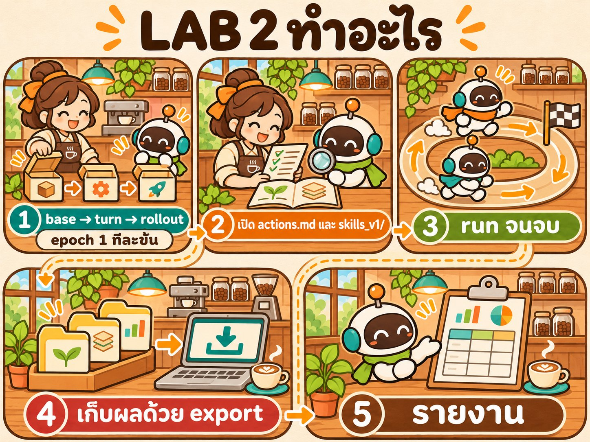
baseturn แล้วเปิด turns/turn_1/actions.md และ skills_v1/ · จากนั้นรันขั้น rolloutrun จนจบ: epoch 2 และ 3 แล้ววัด skills_v3 กับ Test Setexport แล้วคัดลอกโฟลเดอร์ e1 มาแทน runs/e1 บนเครื่องe1)LAB 2 · รัน 1 การรันจนจบ · ไฟล์เข้าและออก
e1 ที่ผ่านขั้น adapt แล้วevoskill (จาก LAB 0)runs/e1/evo/evolver_workspace/notes.md บันทึกที่ Evolver เขียนให้ตัวเองe1)พรอมต์ · LAB 2 · รัน 1 การรันจนจบCopy & Paste
งาน: รันการรัน e1 ต่อจนจบ · ดู Evolver เขียนสกิลทีละตา แล้ววัดกับ Test Set
ที่ทำงาน : container multi-account โฟลเดอร์ /workspace/evlab
เครื่องมือ : สกิล evoskill
เงื่อนไข : ห้ามเปิดตัวตรวจ (bench/benchmark_grader.py bench/check_grader.py) และเฉลย bench/data/baankafe/answers/ · โจทย์ของ Validation Set ดูได้แค่คะแนน · ผลรายข้อของ Test Set เปิดได้หลังขั้น test จบ · ห้ามแก้ไฟล์ใน setup/ reference/ skills_v*/ evo/ เอง
Input: การรัน e1 ที่ผ่านขั้น adapt แล้ว (LAB 1)
- Training Set 4 ข้อ ใช้ให้ Evolver เรียนรู้: t1-cafe-bill t2-split-bill t3-shipping-fee t4-cashback
- Validation Set 2 ข้อ ใช้ดูคะแนนของแต่ละ epoch: v1-parking-fee v2-net-pay
- Test Set 3 ข้อ ใช้วัดตอนจบ: x1-late-fee x2-refund x3-bulk-price
วิธีทดลอง:
- 1 rollout = Solver 1 ตัว (sonnet · effort medium) ได้โจทย์ 1 ข้อ แล้วเขียน solve.py และ test_solve.py ในโฟลเดอร์ว่าง · โจทย์ละ 3 ครั้ง
- epoch 0 ไม่มีสกิล: Training 12 + Validation 6 + Test 9 rollout
- epoch 1–3: Evolver (sonnet · effort high · เซสชันเดียวตลอดการรัน) อ่าน rollout ของ Training แล้วเขียน skills_vK → Solver ทำ Validation 6 และ Training 12 rollout ด้วยชุดนั้น (epoch 3 ไม่ทำ Training)
- จบแล้ววัด skills_v3 กับ Test Set 9 rollout · รวมทั้งการรัน 78 rolloute1)พรอมต์ · LAB 2 · รัน 1 การรันจนจบCopy & Paste
วิธีตรวจ:
- ทุก rollout ตัวตรวจของผู้ใช้รันโค้ดที่ Solver เขียน แล้วให้คะแนน 0–1 = สัดส่วนข้อตรวจที่ผ่าน (10 หรือ 11 ข้อต่อโจทย์) · ผ่าน = ครบทุกข้อ
- Evolver เห็นแค่คะแนนของ Training · ไม่มีประตูรับ: ชุดสกิลของทุก epoch ถูกใช้ และ Test Set วัดด้วยชุดของ epoch สุดท้าย 1 ครั้ง
ทำตามลำดับ:
1. epoch 0 รันขั้น base
2. epoch 1 รันขั้น turn แล้วเปิด turns/turn_1/actions.md และ skills_v1/ สรุปว่า Evolver ทำอะไร และเขียนสกิลอะไร · จากนั้นรันขั้น rollout
3. รันต่อ run จนจบ
4. เก็บผล export การรัน e1 แล้วคัดลอกโฟลเดอร์ e1 ที่ได้ มาแทน 03_week03/07_EvoSkill_v2/runs/e1 บนเครื่อง
5. รายงาน ตาราง ขั้น | ไฟล์ที่เกิด | สรุป 1 บรรทัด · สรุป 3 ตาของ Evolver จาก turns/turn_1 ถึง turn_3/actions.md (ทำอะไร · ข้อสรุป · คะแนน Validation หลังจากนั้น) · ตาราง status · ข้อตรวจที่ไม่ผ่านใน Test Sete1)ตรวจผลของคุณ · LAB 2 · รัน 1 การรันจนจบChecklist
statuse1)ผลจริง LAB 2: Test Set จาก 47.8% เป็น 83.3% ด้วย Evolver 3 ตาruns/e1/state.json
e1)เส้นทางของ e1: ขึ้นใน epoch 1 แล้วขยับเล็กน้อย ทั้ง Training และ Validation
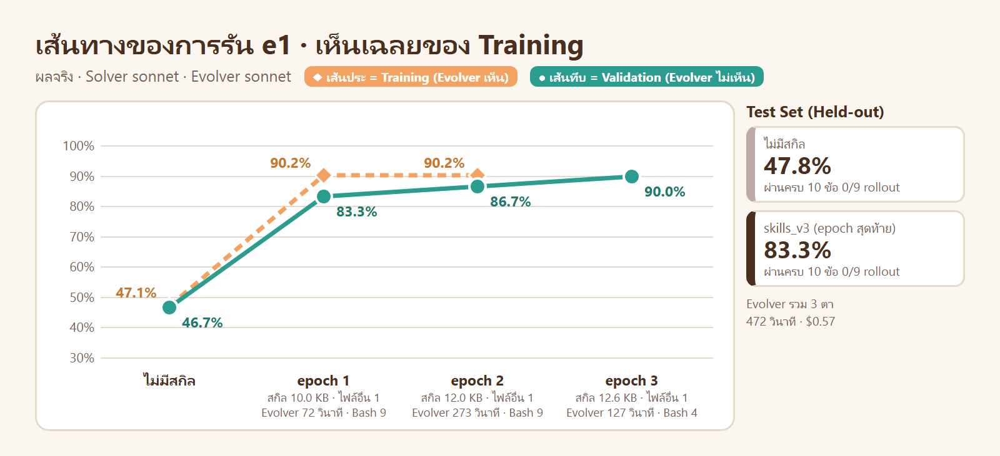
เส้นประ = Training (Evolver เห็น) · เส้นทึบ = Validation (Evolver ไม่เห็น) · ไม่มี rollout ใดผ่านครบทุกข้อ
e1)Evolver ทำอะไรในแต่ละตา: อ่านเฉลย → ทดสอบแล้วเดา → ทดลองแก้

บันทึกของแต่ละตา: turn_1/actions.md · turn_2/actions.md · turn_3/actions.md
e1)ผลของ e1 มี 3 เรื่องที่ควรอ่านแยกกันการรัน e1
1เรื่องที่ 1
Evolver พบนโยบายธุรกิจครบ 4 ข้อเอง ในตาแรก
2เรื่องที่ 2
แต่นโยบายถูกเขียนกว้างกว่าที่เฉลยบอก และไม่มีอะไรกันไว้
3เรื่องที่ 3
0.1 ที่ขาด คือกฎที่อยู่เฉพาะในตัวตรวจ และ Evolver เดาผิดทาง
e1)เรื่องที่ 1 · Evolver พบนโยบายธุรกิจครบ 4 ข้อเอง ในตาแรกruns/e1/skills_v3
หานโยบายธุรกิจเองไม่ได้
ผ่านครบตั้งแต่ epoch 1
policy ของ Training ผ่านครบ 6/6 ตั้งแต่ epoch 1 · นี่คือสิ่งที่ WikiSkill ของบท 06 หาเองไม่ได้ (policy 0/6) เพราะไม่มีใครได้เห็นเฉลยe1)นโยบายถูกเขียนกว้างกว่าที่เฉลยบอก
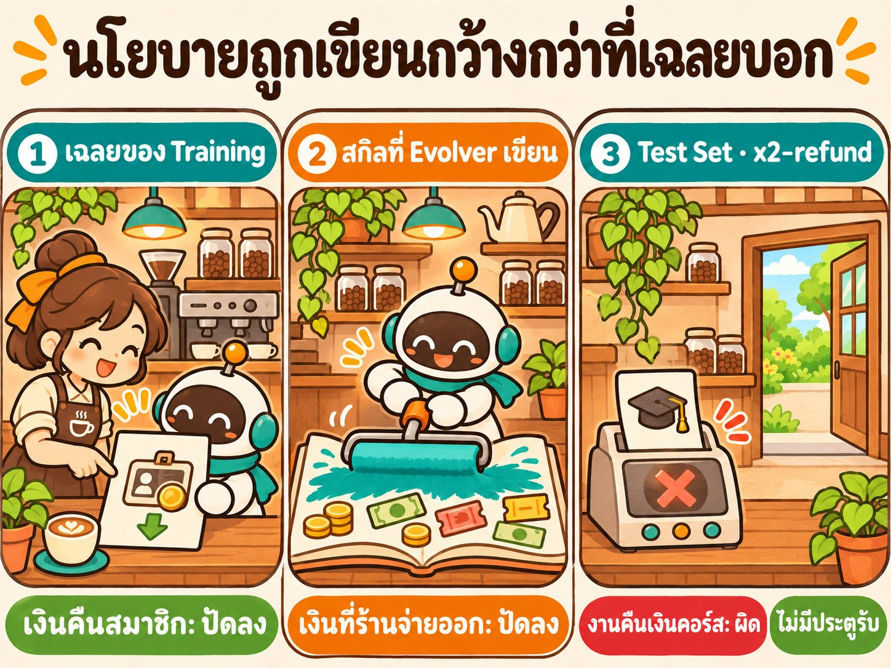
x2-refund ของ Test Set จึงผิดทั้ง 3 rolloute1)เรื่องที่ 2 · หลักฐาน: สกิลเขียนกว้าง · x2-refund ผิดทั้ง 3 rollout
สกิลที่ Evolver เขียน : เงินที่ร้านจ่ายออก (เงินคืน cashback, คืนเงิน, ส่วนลดที่ให้, แต้ม, รางวัล) → ปัดลง (floor)
ผลใน Test Set : ✗ half_up: refund(150, 25, false) คาด 113 ได้ 112 · พลาด 3 จาก 3 กรณี ← x2-refund ทั้ง 3 rolloutx2-refund ใน Test Set: e1 ผิด 3/3 · e2 ผิด 3/3 · v1 ผิด 3/3 · ไม่มีประตูรับ และ Validation 2 โจทย์ไม่มีงานแบบนี้e1)Evolver เห็นแค่คะแนน จึงต้องเดา
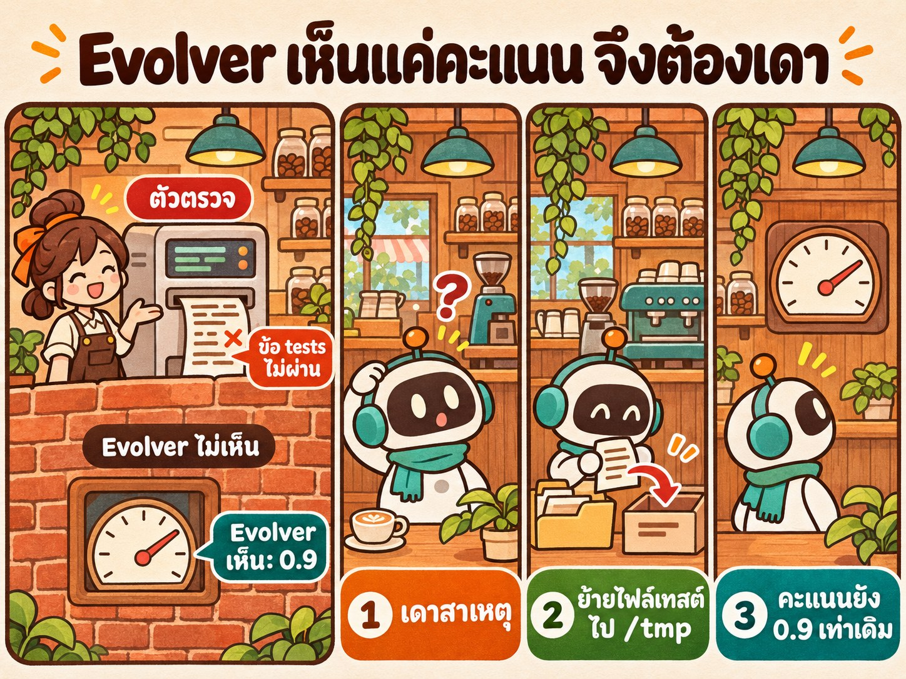
✗ tests: unittest พบ 3 เทสต์ (ต้องมีอย่างน้อย 6) · Evolver เห็น 0.9 → เดาว่าเป็นเรื่องระยะทางรับ float → ห้าม float✗ tests: unittest พบ 4 เทสต์ (ต้องมีอย่างน้อย 6) · Evolver เห็น 0.9 → คะแนนเท่าเดิม → เดาใหม่ว่าไฟล์เทสต์ชนกับผู้ตรวจ → ให้ย้ายไป /tmp✗ tests: ไม่มีไฟล์ test_solve.py ข้าง solve.py → ไม่มีตาถัดไปให้แก้e1)เรื่องที่ 3 · 0.1 ที่ขาด คือกฎที่อยู่เฉพาะในตัวตรวจ และ Evolver เดาผิดทางตารางหลัก
| epoch | สิ่งที่ตัวตรวจพบ (Evolver ไม่เห็น) | สิ่งที่ Evolver เห็น | สิ่งที่ Evolver ทำ |
|---|---|---|---|
| 1 | ✗ tests: unittest พบ 3 เทสต์ (ต้องมีอย่างน้อย 6) | 0.9 | เดาว่าเป็นเรื่องระยะทางรับ float → ห้าม float |
| 2 | ✗ tests: unittest พบ 4 เทสต์ (ต้องมีอย่างน้อย 6) | 0.9 | คะแนนเท่าเดิม → เดาใหม่ว่าไฟล์เทสต์ชนกับผู้ตรวจ → ให้ย้ายไป /tmp |
| 3 (Test) | ✗ tests: ไม่มีไฟล์ test_solve.py ข้าง solve.py | – | ไม่มีตาถัดไปให้แก้ |
notes.md):e1)รันซ้ำด้วยการตั้งค่าเดิม 3 ครั้ง: Test Set 83.3% · 83.3% · 83.3% เท่ากัน แต่เดินคนละเส้นทางe1 · e2 · v1
e1 · Test Set 83.3% (0/9)
- เดาเรื่อง 0.1 ที่ขาด: ระยะทางรับ float → ไฟล์เทสต์ชนกับผู้ตรวจ (ผิดทาง)
- ข้อ
testsใน Test Set: ไม่ผ่าน 9/9 ·ไม่มีไฟล์ test_solve.py x2-refund: ผิด 3/3
e2 · Test Set 83.3% (0/9)
- เดาเรื่อง 0.1 ที่ขาด: ตาที่ 2 สังเกตว่า rollout ที่มี
main()ได้สูงกว่า 0.2 → ให้มีmain()และtest_solve.py(ถูกทาง) - ข้อ
testsใน Test Set: ไม่ผ่าน 9/9 ·unittest พบ 4 เทสต์ x2-refund: ผิด 3/3
v1 · Test Set 83.3% (0/9)
- เดาเรื่อง 0.1 ที่ขาด: ตาที่ 2 เพิ่มแม่แบบไฟล์เทสต์ แต่เขียนว่า "แนะนำ" · ตาที่ 3 "หาสาเหตุไม่ได้" จึงไม่แก้
- ข้อ
testsใน Test Set: ไม่ผ่าน 9/9 ·ไม่มีไฟล์ test_solve.py x2-refund: ผิด 3/3
e1)การตั้งค่าเดียวกัน เส้นทางต่างกัน แต่ติดเพดานเดียวกัน
การตั้งค่าเดียวกัน 3 ครั้ง ได้ Test 83.3% เท่ากัน ทั้งที่เดินคนละเส้นทาง
สิ่งที่เหมือนกันคือ 2 เรื่องที่ไม่มีการรันใดแก้ได้: จำนวนเทสต์ขั้นต่ำ (Evolver ต้อง เดา โดยไม่มีหลักฐาน) และกฎปัดเศษที่เขียนกว้าง
ผู้ใช้บอก Evolver เพิ่ม 1 ประโยค (n1)
ผู้ใช้บอก Evolver เพิ่ม 1 ประโยค
n1n1)สิ่งเดียวที่เปลี่ยน: คำสั่งของผู้ใช้ให้ Reference Folder มี README.md เพิ่ม 1 ประโยค
e1 ติดที่ 0.9 ต่อ rollout เพราะ Evolver ไม่รู้ว่าไฟล์เทสต์เป็นส่วนของงานที่ต้องส่ง · ใน EvoSkill v2 เราไม่แก้ prompt ของ Evolver และไม่เปิดตัวตรวจให้ดู · ช่องทางเดียวคือ คำสั่งของผู้ใช้ ซึ่งกำหนดว่าโฟลเดอร์ reference มีอะไร
instruction_with_note.md ต่างจาก instruction.md ที่ย่อหน้าเดียว:
ให้เขียนไฟล์ `README.md` ไว้ที่ชั้นบนสุดของโฟลเดอร์ reference ด้วย มีข้อความนี้ข้อความเดียว:
"โฟลเดอร์ `answers/<task id>/` คือผลงานของโจทย์นั้นที่ได้คะแนนเต็ม ประกอบด้วย 2 ไฟล์ คือ `solve.py` และ `test_solve.py`"n1)LAB 3 ทำอะไร
n1 เหมือน e1 ทุกค่า ต่างจุดเดียว: ใช้ bench/instruction_with_note.mdREADME.md 1 ประโยคไว้ที่ชั้นบนสุดของ reference/run จนจบ แล้ว export และคัดลอกโฟลเดอร์ n1 มาแทน runs/n1reference/README.md · ตาราง status ของ n1 เทียบ e1 · สรุป 3 ตาของ Evolver · ข้อตรวจที่ไม่ผ่านใน Test Setn1)LAB 3 · ผู้ใช้บอก Evolver เพิ่ม 1 ประโยค · ไฟล์เข้าและออก
runs/n1/ การรันใหม่ทั้งโฟลเดอร์ · reference/README.md 1 ประโยคn1)พรอมต์ · LAB 3 · ผู้ใช้บอก Evolver เพิ่ม 1 ประโยคCopy & Paste
งาน: รัน EvoSkill v2 อีก 1 การรัน (n1) ที่ผู้ใช้บอก Evolver เพิ่ม 1 ประโยค ผ่านโฟลเดอร์ reference · เทียบกับ e1
ที่ทำงาน : container multi-account โฟลเดอร์ /workspace/evlab
เครื่องมือ : สกิล evoskill
เงื่อนไข : ห้ามเปิดตัวตรวจ (bench/benchmark_grader.py bench/check_grader.py) และเฉลย bench/data/baankafe/answers/ · โจทย์ของ Validation Set ดูได้แค่คะแนน · ผลรายข้อของ Test Set เปิดได้หลังขั้น test จบ · ห้ามแก้ไฟล์ใน setup/ reference/ skills_v*/ evo/ เอง
Input: สิ่งที่ผู้ใช้ส่งใน bench/ ชุดเดียวกับ e1 ยกเว้นไฟล์คำสั่ง
- bench/instruction_with_note.md = instruction.md + 1 ย่อหน้า: ให้ Benchmark Adaptor เขียน README.md ไว้ในโฟลเดอร์ reference มีข้อความเดียวว่า "โฟลเดอร์ answers/<task id>/ คือผลงานของโจทย์นั้นที่ได้คะแนนเต็ม ประกอบด้วย 2 ไฟล์ คือ solve.py และ test_solve.py"
วิธีทดลอง:
- การรันชื่อ n1 · ต่างจาก e1 จุดเดียว: ใช้คำสั่งของผู้ใช้ bench/instruction_with_note.md
- ค่าอื่นเหมือน e1 ทุกค่า: 3 epochs · โจทย์ละ 3 ครั้ง · Solver sonnet effort medium · Evolver sonnet effort high · ใช้ทุกบัญชี yolo ที่ล็อกอินแล้ว รันพร้อมกันไม่เกิน 6 rollout
- 1 การรัน = 78 rollout: epoch 0 ไม่มีสกิล 27 (Training 12 · Validation 6 · Test 9) · epoch 1 และ 2 ชุดละ 18 · epoch 3 เฉพาะ Validation 6 · Test 9 ด้วยชุดสกิลของ epoch 3n1)พรอมต์ · LAB 3 · ผู้ใช้บอก Evolver เพิ่ม 1 ประโยคCopy & Paste
วิธีตรวจ:
- ทุก rollout ตัวตรวจของผู้ใช้รันโค้ดที่ Solver เขียน แล้วให้คะแนน 0–1 = สัดส่วนข้อตรวจที่ผ่าน (10 หรือ 11 ข้อต่อโจทย์) · ผ่าน = ครบทุกข้อ
- Evolver เห็นแค่คะแนนของ Training · ไม่มีประตูรับ: ชุดสกิลของทุก epoch ถูกใช้ และ Test Set วัดด้วยชุดของ epoch สุดท้าย 1 ครั้ง
ทำตามลำดับ:
1. สร้าง การรัน n1 แล้ว run จนจบ
2. เก็บผล export การรัน n1 แล้วคัดลอกโฟลเดอร์ n1 ที่ได้ มาแทน 03_week03/07_EvoSkill_v2/runs/n1 บนเครื่อง
3. รายงาน เนื้อหาของ reference/README.md · ตาราง status ของ n1 เทียบ e1 · สรุป 3 ตาของ Evolver (ทำอะไร · ข้อสรุป · คะแนน Validation หลังจากนั้น) · ข้อตรวจที่ไม่ผ่านใน Test Setn1)ตรวจผลของคุณ · LAB 3 · ผู้ใช้บอก Evolver เพิ่ม 1 ประโยคChecklist
statusn1)ผลจริง LAB 3: เพิ่ม 1 ประโยค Test Set เป็น 93.3% ทั้งสองการรันruns/n1 · runs/n2
e1 · ไม่มีหมายเหตุn1 · เพิ่ม 1 ประโยคn2 · รันซ้ำe1 $0.57 · n2 $0.50n1)เส้นทางของ n1: Training เต็มตั้งแต่ epoch 1 · Validation ค่อย ๆ ขึ้น
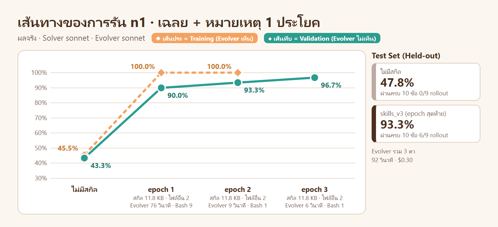
สกิลให้ Solver ส่ง test_solve.py หรือไม่ · e1: ไม่ (ตาที่ 3 ให้ย้ายไป /tmp) · n1: ให้ส่งตั้งแต่ตาแรก พร้อมแม่แบบไฟล์เทสต์
n1)n1 ทีละตา: ให้ส่งไฟล์เทสต์ตั้งแต่ตาแรก แล้วตาที่ 2–3 ไม่แก้อะไรruns/n1/turns
1Validation 43.3% → 90.0%
อ่าน README.md และเฉลย → รัน test_solve.py ของเฉลยกับโค้ดของ Solver ทั้ง 12 rollout → เขียนสกิล 2 ตัว: baankafe-money-fn (ต้องเขียนและรัน test_solve.py ก่อนจบ พร้อมแม่แบบ template_test.py) และ baankafe-policies (นโยบายที่โจทย์ไม่ได้เขียน)
2Validation 90.0% → 93.3%
Training ได้ 1.0 ทั้ง 12 rollout → ไม่แก้ ("ไม่มีจุดพลาดให้แก้ และไม่อยากให้สกิลเอนเข้าหาโจทย์ train 4 ข้อ")
3Validation 93.3% → 96.7%
เหมือนตาที่ 2 → ไม่แก้
n1)Validation ที่ขยับ ไม่ได้มาจากการแก้สกิล
เป็นความแกว่งของ Solver ล้วน ๆ (LAB 7)
Validation ที่ขยับ 90.0% → 93.3% → 96.7% ไม่ได้มาจากการแก้สกิล (ตาที่ 2 และ 3 ไม่ได้แก้อะไร ชุดสกิลทั้ง 3 epoch เหมือนกันทุกไบต์)
n1)เพดานของทุกการรันที่เห็นเฉลย
93.3% คือเพดานของทุกการรันที่เห็นเฉลย
งาน x2-refund ยังผิด 2 ข้อตรวจทั้ง 3 rollout เพราะนโยบายปัดเศษที่เขียนกว้าง ("เงินออกจากร้าน = ปัดลง") · ประโยคที่เราเพิ่มแก้ได้เฉพาะเรื่องที่เราบอก
n1)บทเรียนของ LAB 3
สิ่งที่คนปรับได้คือ "Evolver ได้เห็นอะไร" ไม่ใช่ "Evolver ต้องคิดอย่างไร"
ถ้ากฎใดอยู่เฉพาะในตัวตรวจและเราต้องการให้สกิลรู้ ต้องบอกผ่านโฟลเดอร์ reference
Evolver เห็นแต่คะแนน (p1)
Evolver เห็นแต่คะแนน
p1p1)LAB 4 ทำอะไร
p1 เหมือน e1 ต่างจุดเดียว: ใช้ bench/instruction_score_only.mdrun จนจบ แล้ว export และคัดลอกโฟลเดอร์ p1 มาแทน runs/p1evo/evolver_workspace/ ดูบันทึกที่ Evolver เขียนให้ตัวเองreference/ · ตาราง status ของ p1 เทียบ e1 · สรุป 3 ตาของ Evolver · ข้อตรวจที่ไม่ผ่านใน Test Setp1)LAB 4 · Evolver เห็นแต่คะแนน · ไฟล์เข้าและออก
runs/p1/ การรันใหม่ทั้งโฟลเดอร์ · reference/ มีแต่โจทย์ของ Trainingruns/p1/evo/evolver_workspace/notes.md บันทึกการทดลองของ Evolverp1)พรอมต์ · LAB 4 · Evolver เห็นแต่คะแนนCopy & Paste
งาน: รัน EvoSkill v2 อีก 1 การรัน (p1) ที่ Evolver ไม่ได้เห็นเฉลยของชุดใดเลย เห็นแต่คะแนน · เทียบกับ e1
ที่ทำงาน : container multi-account โฟลเดอร์ /workspace/evlab
เครื่องมือ : สกิล evoskill
เงื่อนไข : ห้ามเปิดตัวตรวจ (bench/benchmark_grader.py bench/check_grader.py) และเฉลย bench/data/baankafe/answers/ · โจทย์ของ Validation Set ดูได้แค่คะแนน · ผลรายข้อของ Test Set เปิดได้หลังขั้น test จบ · ห้ามแก้ไฟล์ใน setup/ reference/ skills_v*/ evo/ เอง
Input: สิ่งที่ผู้ใช้ส่งใน bench/ ชุดเดียวกับ e1 ยกเว้นไฟล์คำสั่ง
- bench/instruction_score_only.md = instruction.md ที่เปลี่ยนหัวข้อ "สิ่งที่ Evolver เห็นได้" เป็น: อ่านได้เฉพาะข้อความโจทย์ของ Training ห้ามเห็นเฉลยอ้างอิงของชุดใดเลย
วิธีทดลอง:
- การรันชื่อ p1 · ต่างจาก e1 จุดเดียว: ใช้คำสั่งของผู้ใช้ bench/instruction_score_only.md
- ค่าอื่นเหมือน e1 ทุกค่า: 3 epochs · โจทย์ละ 3 ครั้ง · Solver sonnet effort medium · Evolver sonnet effort high · ใช้ทุกบัญชี yolo ที่ล็อกอินแล้ว รันพร้อมกันไม่เกิน 6 rollout
- 1 การรัน = 78 rollout: epoch 0 ไม่มีสกิล 27 (Training 12 · Validation 6 · Test 9) · epoch 1 และ 2 ชุดละ 18 · epoch 3 เฉพาะ Validation 6 · Test 9 ด้วยชุดสกิลของ epoch 3p1)พรอมต์ · LAB 4 · Evolver เห็นแต่คะแนนCopy & Paste
วิธีตรวจ:
- ทุก rollout ตัวตรวจของผู้ใช้รันโค้ดที่ Solver เขียน แล้วให้คะแนน 0–1 = สัดส่วนข้อตรวจที่ผ่าน (10 หรือ 11 ข้อต่อโจทย์) · ผ่าน = ครบทุกข้อ
- Evolver เห็นแค่คะแนนของ Training · ไม่มีประตูรับ: ชุดสกิลของทุก epoch ถูกใช้ และ Test Set วัดด้วยชุดของ epoch สุดท้าย 1 ครั้ง
ทำตามลำดับ:
1. สร้าง การรัน p1 แล้ว run จนจบ
2. เก็บผล export การรัน p1 แล้วคัดลอกโฟลเดอร์ p1 ที่ได้ มาแทน 03_week03/07_EvoSkill_v2/runs/p1 บนเครื่อง
3. รายงาน รายการไฟล์ใน reference/ · ตาราง status ของ p1 เทียบ e1 · สรุป 3 ตาของ Evolver (ทำอะไร · ข้อสรุป · คะแนน Validation หลังจากนั้น) · เนื้อหาของ evo/evolver_workspace/ · ข้อตรวจที่ไม่ผ่านใน Test Setp1)ตรวจผลของคุณ · LAB 4 · Evolver เห็นแต่คะแนนChecklist
README.md ที่ Adaptor เขียนอธิบาย benchmark เอง) · Evolver 3 ตารวม $0.46statusp1)ผลจริง LAB 4: ไม่มีเฉลย Test Set เหลือ 70.0% และ 56.7%runs/p1 · runs/p2
e1 · เห็นเฉลยreference/ 12 ไฟล์p1 · เห็นแต่คะแนนreference/ 5 ไฟล์ (ไม่มีเฉลย)p2 · รันซ้ำp1 หลัง epoch 1e1: จำนวนเทสต์ขั้นต่ำ · p1: รันเป็นโปรแกรม (CLI) · ไฟล์เทสต์ · นโยบายธุรกิจ 4 ข้อp1)เส้นทางของ p1: Validation ตกใน epoch 1 แล้วขึ้นทีละ epoch
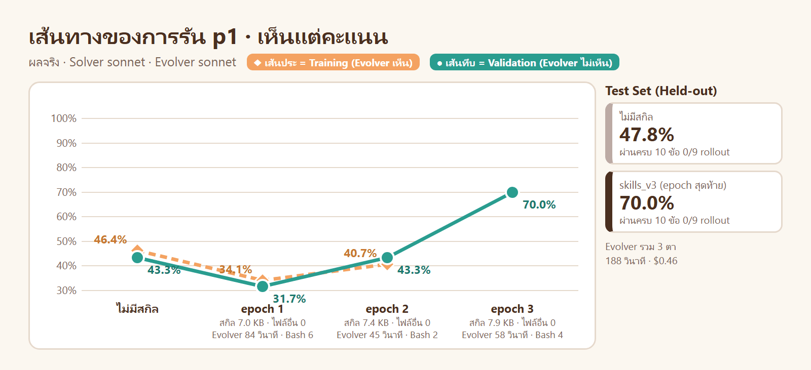
การตั้งค่าที่สองของเปเปอร์ (Pass or Fail Only): โฟลเดอร์ reference ไม่มีเฉลยของชุดใดเลย
p1)ไม่มีเฉลยให้เทียบ: Evolver ใช้คะแนนของ epoch ถัดไปเป็นคำตอบruns/p1/turns
1Validation 43.3% → 31.7% (ต่ำกว่าไม่มีสกิล)
เห็นว่า Solver ทุกตัวปัดครึ่งขึ้นแล้วยังได้ 0.5 → ตั้งสมมติฐานว่า "กฎของร้านคือ ปัดลงทุกขั้น" → เขียนลงสกิล
2Validation 31.7% → 43.3%
ปัดลงแย่กว่าเดิม → "ความจริงน่าจะเป็น ปัดขึ้น" → ทดลองปัดขึ้นครั้งเดียวตอนจบ
3Validation 43.3% → 70.0%
เทียบคะแนนราย rollout: ครั้งที่ Solver บังเอิญตรวจ input แล้ว raise ValueError ได้คะแนนสูงกว่า → สรุปว่าตัวตรวจมีกรณี input ผิด → กลับไปปัดครึ่งขึ้น + ตรวจ input เข้มงวด
p1)บันทึกที่ Evolver เขียนให้ตัวเอง: แต่ละ epoch คือการทดลอง 1 ครั้ง
บันทึกที่ Evolver เขียนให้ตัวเอง (notes.md):
# epoch1 hypothesis tested: floor at EVERY step (integer //). If scores don't improve, try: half-even final, ceil, per-step half-up.
# epoch1 result: floor per-step WORSE: t1 .2, t2 .4, t3 .3636, t4 .4 … => truth likely CEIL. epoch2 test: exact math, ceil once at end.
# KEY: t3 s2 and t4 s3 had ValueError input validation => +1 test each. … => hidden tests include invalid-input cases expecting exceptions.
# epoch3: half-up exact final + strict validation … Next if <1: per-step rounding, empty items handling, validation strictnessp1 คือการทดลองของ epoch 3 ที่ยังไม่มีใครตรวจ และถูกนำไปวัด Test Set ทันทีp1)3 เรื่องที่เห็นจากการรันที่มีแต่คะแนน
1epoch คือการทดลองของ Evolver
เมื่อไม่มีเฉลย มันเปลี่ยนทีละเรื่อง แล้วใช้คะแนนของ epoch ถัดไปเป็นคำตอบ (ปัดลง → ปัดขึ้น → ปัดครึ่งขึ้น + ตรวจ input) · 2 ใน 3 epoch ชุดสกิลแย่กว่าหรือเท่ากับไม่มีสกิล และ ถูกใช้ทั้งหมด เพราะไม่มีประตูรับ
2สิ่งที่ไม่มีใน rollout ใดเลย คะแนนบอกไม่ได้
ไม่มี Solver ตัวใดเขียนโหมดรันเป็นโปรแกรมหรือไฟล์เทสต์ จึงไม่มีคะแนนที่ต่างกันให้ Evolver สังเกต ข้อตรวจ 3 ข้อนี้จึงไม่ผ่านจนจบ
3Evolver ไม่รู้ว่าตาใดเป็นตาสุดท้าย
เพราะ prompt ไม่ได้บอกจำนวน epoch บันทึกของมันยังวางแผน "ถ้ายังไม่ถึง 1 จะลอง…" ต่อ (แบบฝึกหัดข้อ 3)
p1)รันซ้ำ p2: Evolver ทดลองวิธีปัดเศษต่างกันตามชนิดงาน ได้ 56.7%runs/p2
notes.md)ตัดความจำของ Evolver ออก (f1)
ตัดความจำของ Evolver ออก
f1e1f1)เซสชันเดียวตลอดการรัน: สิ่งที่ LAB นี้ตัดออกคือความจำของ Evolver
เปเปอร์ให้เหตุผลว่าเซสชันเดียวดีกว่าการเริ่มใหม่ทุกรอบ · ลองกับโจทย์ของเรา: เหมือน e1 ทุกค่า แต่ Evolver เริ่มเซสชันใหม่ทุก epoch (ไฟล์ทุกอย่างยังอยู่ หายเฉพาะความจำในเซสชัน)
f1)LAB 5 ทำอะไร
f1 เหมือน e1 ต่างจุดเดียว: Evolver เริ่มเซสชันใหม่ทุก epoch (--fresh-session)evo/ ยังอยู่ข้าม epoch หายเฉพาะความจำในเซสชันrun จนจบ แล้ว export และคัดลอกโฟลเดอร์ f1 มาแทน runs/f1f1 เทียบ e1 · สรุป 3 ตาของ Evolver (ตานั้นรู้เรื่องของตาก่อนจากที่ใด) · ไฟล์ใน evo/evolver_workspace/f1)LAB 5 · ตัดความจำของ Evolver ออก · ไฟล์เข้าและออก
bench/ ชุดเดียวกับ e1 ทุกไฟล์runs/f1/ การรันใหม่ทั้งโฟลเดอร์ · status.txtruns/f1/evo/evolver_workspace/notes.md สิ่งเดียวที่ส่งความรู้ข้ามตาf1)พรอมต์ · LAB 5 · ตัดความจำของ Evolver ออกCopy & Paste
งาน: รัน EvoSkill v2 อีก 1 การรัน (f1) ที่ Evolver เริ่มเซสชันใหม่ทุก epoch (ตัดความจำของเซสชันออก) · เทียบกับ e1
ที่ทำงาน : container multi-account โฟลเดอร์ /workspace/evlab
เครื่องมือ : สกิล evoskill
เงื่อนไข : ห้ามเปิดตัวตรวจ (bench/benchmark_grader.py bench/check_grader.py) และเฉลย bench/data/baankafe/answers/ · โจทย์ของ Validation Set ดูได้แค่คะแนน · ผลรายข้อของ Test Set เปิดได้หลังขั้น test จบ · ห้ามแก้ไฟล์ใน setup/ reference/ skills_v*/ evo/ เอง
Input: สิ่งที่ผู้ใช้ส่งใน bench/ ชุดเดียวกับ e1 ทุกไฟล์ (คำสั่ง bench/instruction.md)
วิธีทดลอง:
- การรันชื่อ f1 · ต่างจาก e1 จุดเดียว: Evolver เริ่มเซสชันใหม่ทุก epoch (ตัวเลือก fresh session ของสกิล) · ไฟล์ทุกอย่างใน evo/ ยังอยู่ข้าม epoch หายเฉพาะความจำในเซสชัน
- ค่าอื่นเหมือน e1 ทุกค่า: 3 epochs · โจทย์ละ 3 ครั้ง · Solver sonnet effort medium · Evolver sonnet effort high · ใช้ทุกบัญชี yolo ที่ล็อกอินแล้ว รันพร้อมกันไม่เกิน 6 rollout
- 1 การรัน = 78 rollout: epoch 0 ไม่มีสกิล 27 (Training 12 · Validation 6 · Test 9) · epoch 1 และ 2 ชุดละ 18 · epoch 3 เฉพาะ Validation 6 · Test 9 ด้วยชุดสกิลของ epoch 3
วิธีตรวจ:
- ทุก rollout ตัวตรวจของผู้ใช้รันโค้ดที่ Solver เขียน แล้วให้คะแนน 0–1 = สัดส่วนข้อตรวจที่ผ่าน (10 หรือ 11 ข้อต่อโจทย์) · ผ่าน = ครบทุกข้อ
- Evolver เห็นแค่คะแนนของ Training · ไม่มีประตูรับ: ชุดสกิลของทุก epoch ถูกใช้ และ Test Set วัดด้วยชุดของ epoch สุดท้าย 1 ครั้ง
ทำตามลำดับ:
1. สร้าง การรัน f1 แล้ว run จนจบ
2. เก็บผล export การรัน f1 แล้วคัดลอกโฟลเดอร์ f1 ที่ได้ มาแทน 03_week03/07_EvoSkill_v2/runs/f1 บนเครื่อง
3. รายงาน ตาราง status ของ f1 เทียบ e1 · สรุป 3 ตาของ Evolver (ทำอะไร · ข้อสรุป · คะแนน Validation หลังจากนั้น · ตานั้นรู้เรื่องของตาก่อนจากที่ใด) · ไฟล์ใน evo/evolver_workspace/ · ข้อตรวจที่ไม่ผ่านใน Test Setf1)ตรวจผลของคุณ · LAB 5 · ตัดความจำของ Evolver ออกChecklist
e1 · Validation 40.0% → 80.0% → 80.0% → 80.0% · Evolver 3 ตารวม $0.69statusf1)ผลจริง LAB 5: ไม่พบว่าเซสชันเดียวดีกว่า · Test Set เฉลี่ย 83.3% และ 87.4%Test Set · 6 การรัน
e1 · เซสชันเดียวe2 · เซสชันเดียวv1 · เซสชันเดียวf1 · เซสชันใหม่ทุก epochf2 · เซสชันใหม่ทุก epochf3 · เซสชันใหม่ทุก epochf1)เส้นทางของ f1: รูปร่างเดียวกับ e1
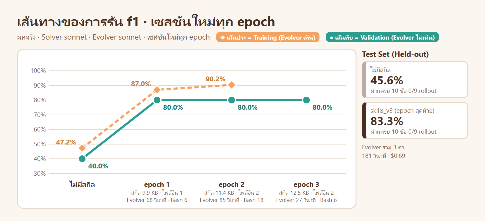
Validation ของ f1: 40.0% → 80.0% → 80.0% → 80.0% · ของ e1: 46.7% → 83.3% → 86.7% → 90.0%
f1)f1 ทีละตา: เซสชันใหม่ยังส่งต่อความรู้ผ่านไฟล์โน้ตได้runs/f1/turns
1Validation 40.0% → 80.0%
อ่านเฉลย เห็นนโยบายของร้านและการตรวจ input → เขียนสกิล 1 ตัว + แม่แบบโค้ด · จดโน้ตไว้ให้ตาถัดไปเอง
รู้เรื่องของตาก่อนจาก: –
2Validation 80.0% → 80.0%
เทียบโค้ดของ Solver กับเฉลย (เครื่องมือ 18 ครั้ง) → แก้ rollout ที่ลืมแก้ชื่อฟังก์ชันในแม่แบบ · ห้าม float · เพิ่มสคริปต์ check_solve.py
รู้เรื่องของตาก่อนจาก: notes.md + ชุดสกิลใน staging/ + skills/epoch_1/
3Validation 80.0% → 80.0%
โค้ดตรงกับเฉลยทุกกรณี → "0.1 ที่เหลือน่าจะไม่เกี่ยวกับโค้ด อย่าแก้เพิ่ม" → เพิ่มขั้นตรวจก่อนส่ง 1 ข้อ
รู้เรื่องของตาก่อนจาก: notes.md + staging/
f1)สิ่งที่ชี้ขาดไม่ใช่ความจำของเซสชัน
สิ่งที่ชี้ขาดคือ มีตาใดทำให้ Solver ส่งไฟล์เทสต์ที่ครบเกณฑ์หรือไม่
f3 ตาที่ 3 เดาว่า "0.1 ที่เหลือน่าจะเป็นคุณภาพของ test_solve.py เพราะของ Solver มี 3 เมธอด ส่วนเฉลยมี 12 เมธอด · นี่เป็นการเดา ไม่มีหลักฐานจากคะแนนยืนยัน" แล้วเพิ่มแม่แบบไฟล์เทสต์ 12 เมธอด → เป็นการรันเดียวที่ไม่ได้รับหมายเหตุจากผู้ใช้ แต่ผ่านข้อ tests ครบ
โมเดลเล็กปรับสกิลของตัวเอง (h1)
โมเดลเล็กปรับสกิลของตัวเอง
h1h1)LAB 6 ทำอะไร
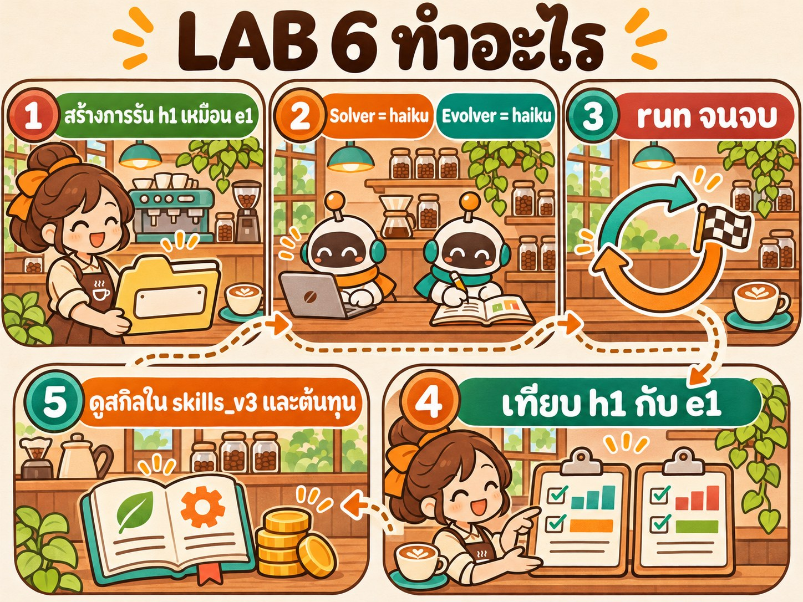
h1 เหมือน e1 ต่างจุดเดียว: Solver และ Evolver เป็น haiku (--solver-model haiku --evolver-model haiku)run จนจบ แล้ว export และคัดลอกโฟลเดอร์ h1 มาแทน runs/h1h1 กับ e1skills_v3 · ไฟล์ใน evo/evolver_workspace/ · ต้นทุนรวมของ Evolver 3 ตา และของ Solverh1)LAB 6 · โมเดลเล็กปรับสกิลของตัวเอง · ไฟล์เข้าและออก
bench/ ชุดเดียวกับ e1 ทุกไฟล์runs/h1/evo/evolver_workspace/ โน้ต 3 ไฟล์ และสคริปต์วิเคราะห์ของ Evolverh1)พรอมต์ · LAB 6 · โมเดลเล็กปรับสกิลของตัวเองCopy & Paste
งาน: รัน EvoSkill v2 อีก 1 การรัน (h1) ที่โมเดลเล็ก (haiku) เป็นทั้ง Solver และ Evolver · เทียบกับ e1
ที่ทำงาน : container multi-account โฟลเดอร์ /workspace/evlab
เครื่องมือ : สกิล evoskill
เงื่อนไข : ห้ามเปิดตัวตรวจ (bench/benchmark_grader.py bench/check_grader.py) และเฉลย bench/data/baankafe/answers/ · โจทย์ของ Validation Set ดูได้แค่คะแนน · ผลรายข้อของ Test Set เปิดได้หลังขั้น test จบ · ห้ามแก้ไฟล์ใน setup/ reference/ skills_v*/ evo/ เอง
Input: สิ่งที่ผู้ใช้ส่งใน bench/ ชุดเดียวกับ e1 ทุกไฟล์ (คำสั่ง bench/instruction.md)
วิธีทดลอง:
- การรันชื่อ h1 · ต่างจาก e1 จุดเดียว: โมเดลของ Solver และของ Evolver เป็น haiku (effort คงเดิม)
- ค่าอื่นเหมือน e1 ทุกค่า: 3 epochs · โจทย์ละ 3 ครั้ง · Solver sonnet effort medium · Evolver sonnet effort high · ใช้ทุกบัญชี yolo ที่ล็อกอินแล้ว รันพร้อมกันไม่เกิน 6 rollout
- 1 การรัน = 78 rollout: epoch 0 ไม่มีสกิล 27 (Training 12 · Validation 6 · Test 9) · epoch 1 และ 2 ชุดละ 18 · epoch 3 เฉพาะ Validation 6 · Test 9 ด้วยชุดสกิลของ epoch 3
วิธีตรวจ:
- ทุก rollout ตัวตรวจของผู้ใช้รันโค้ดที่ Solver เขียน แล้วให้คะแนน 0–1 = สัดส่วนข้อตรวจที่ผ่าน (10 หรือ 11 ข้อต่อโจทย์) · ผ่าน = ครบทุกข้อ
- Evolver เห็นแค่คะแนนของ Training · ไม่มีประตูรับ: ชุดสกิลของทุก epoch ถูกใช้ และ Test Set วัดด้วยชุดของ epoch สุดท้าย 1 ครั้ง
ทำตามลำดับ:
1. สร้าง การรัน h1 แล้ว run จนจบ
2. เก็บผล export การรัน h1 แล้วคัดลอกโฟลเดอร์ h1 ที่ได้ มาแทน 03_week03/07_EvoSkill_v2/runs/h1 บนเครื่อง
3. รายงาน ตาราง status ของ h1 เทียบ e1 · ชื่อและ description ของสกิลใน skills_v3 · ไฟล์ใน evo/evolver_workspace/ · ต้นทุนรวมของ Evolver 3 ตา และของ Solver · ข้อตรวจที่ไม่ผ่านใน Test Seth1)ตรวจผลของคุณ · LAB 6 · โมเดลเล็กปรับสกิลของตัวเองChecklist
statush1)ผลจริง LAB 6: haiku ปรับสกิลของตัวเองได้ 62.2% แต่รันซ้ำได้ 71.1%runs/h1 · runs/h2
h1 · haiku ทั้งคู่e1 · sonnet ทั้งคู่e1 $0.57e1 $8.81h2 · รันซ้ำanalysis/runtests.sh) จดผลเป็นตาราง แล้ว เรียกสคริปต์เดิมซ้ำในตาถัดไป (พฤติกรรมที่เปเปอร์ยกเป็นประโยชน์ของโฟลเดอร์ส่วนตัว และเป็นการรันเดียวของ LAB 2–6 ที่เกิดขึ้น)h1)เส้นทางของ h1: haiku ขึ้นใน epoch 1 แล้วตกลงเล็กน้อย
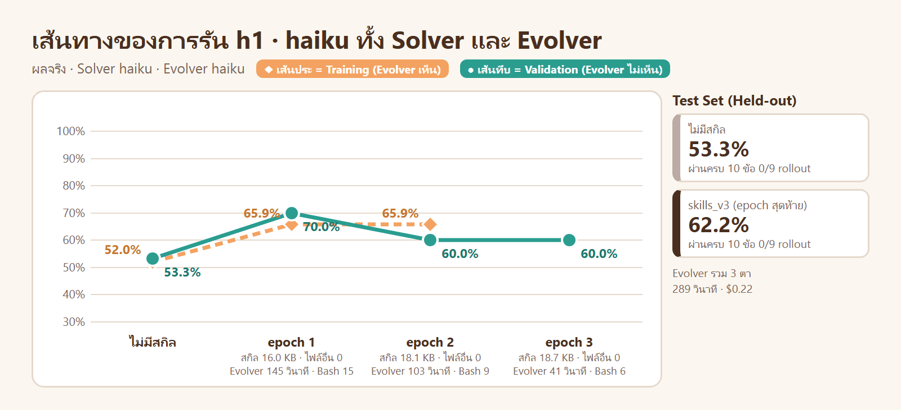
เปเปอร์รายงานว่า Haiku 5.5 เป็นทั้ง Solver และ Evolver แล้วยังปรับสกิลของตัวเองได้ (+21.5 จุดบน τ³-bench)
h1)จุดที่ต่าง: haiku พบนโยบายธุรกิจ แต่ไม่ได้เขียนลงสกิล · และไม่พบโหมดรันเป็นโปรแกรมruns/h1/evo/evolver_workspace
sonnet ทั้งคู่ (e1)
- นโยบายธุรกิจ 4 ข้อ: พบ และเขียนลงสกิล (
policyผ่าน 6/6) - รันเป็นโปรแกรม (CLI): พบจากเฉลย และใส่แม่แบบ
main()
haiku ทั้งคู่ (h1)
- นโยบายธุรกิจ 4 ข้อ: พบ แต่ไม่ได้เขียนลงสกิล (
policyผ่าน 0/6) - รันเป็นโปรแกรม (CLI): ไม่พบ ·
cli_okcli_errorไม่ผ่านทุก rollout จนจบ
main() ที่รับส่ง JSON · (2) การเทียบกับเฉลยพบความต่างของนโยบาย (silver ในเดือนเกิด · ส่งด่วนเกิน 20,000 กรัม · ระยะ 0 กม.) และจดไว้ในโน้ต แต่สกิลที่เขียนสอนแค่เรื่องทั่วไป (จำนวนเต็ม · การตรวจ input · รายการตรวจก่อนส่ง) · prompt ของ Evolver ไม่ได้กำกับเรื่องนี้ การรันแต่ละครั้งจึงตัดสินใจต่างกันได้h1)รันซ้ำ h2 ได้ Test Set 71.1%: เส้นทางคล้าย h1 แต่ต่างที่ไฟล์เทสต์runs/h2
เหมือน h1
- เส้นทางคล้าย
h1: รันเทสต์ของเฉลยกับโค้ดของ Solver ทุก rollout ใช้สคริปต์เดิมซ้ำ 8 ครั้งในตาที่ 2 - ไม่พบโหมดรันเป็นโปรแกรม (
cli_okcli_errorไม่ผ่านทุก rollout) - ไม่เขียนนโยบาย 3 ข้อลงสกิล (
policyผ่าน 0/6)
ต่างจาก h1
ต่างจาก h1 ที่ให้ Solver ส่งไฟล์เทสต์ (ข้อ tests ผ่าน 7/9 ใน Test)
ความแกว่ง และประตูรับที่เราไม่ได้ใช้
ความแกว่ง และประตูรับที่เราไม่ได้ใช้
ทำครั้งเดียว แยกไม่ออกว่าพลาดจริงหรือบังเอิญ

LAB นี้ไม่ใช้โทเคน: นำผลที่มีอยู่มาตอบว่า "ถ้าเราใช้ประตูรับแบบวัดโจทย์ละ 1 ครั้ง จะเกิดอะไรขึ้น"
LAB 7 ทำอะไร
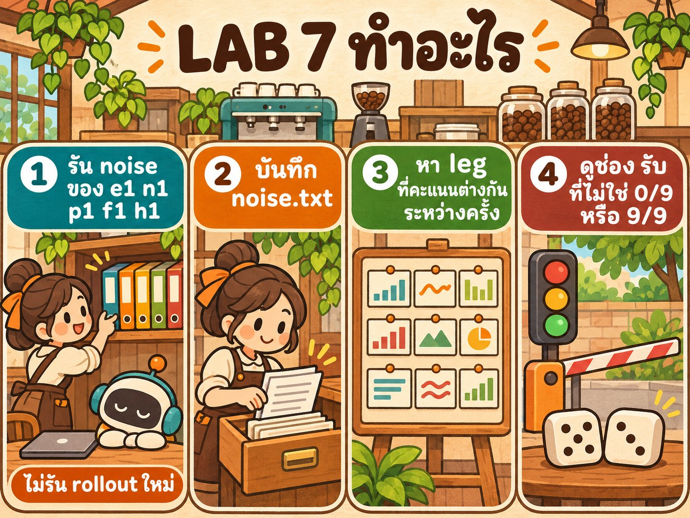
noise ของการรัน e1 n1 p1 f1 h1 · ไม่รัน rollout ใหม่ (ไม่ใช้โทเคน)runs/<ชื่อ>/noise.txt บนเครื่องLAB 7 · ความแกว่ง และประตูรับที่เราไม่ได้ใช้ · ไฟล์เข้าและออก
e1 n1 p1 f1 h1 ที่จบแล้ว (คะแนนราย rollout ใน state.json)runs/<ชื่อ>/noise.txt ของทั้ง 5 การรัน เช่น runs/n1/noise.txtพรอมต์ · LAB 7 · ความแกว่ง และประตูรับที่เราไม่ได้ใช้Copy & Paste
งาน: ดูความแกว่งของคะแนน และตอบว่าถ้า EvoSkill v2 มีประตูรับแบบวัดโจทย์ละ 1 ครั้ง จะเกิดอะไรขึ้น (ไม่รัน rollout ใหม่ ไม่ใช้โทเคน)
ที่ทำงาน : container multi-account โฟลเดอร์ /workspace/evlab
เครื่องมือ : สกิล evoskill
เงื่อนไข : ใช้ผลที่มีอยู่เท่านั้น ห้ามรัน rollout หรือ Agent ใหม่
Input: การรันที่จบแล้วจาก LAB 2–6: e1 n1 p1 f1 h1 (การรันละ 78 rollout · โจทย์ละ 3 ครั้ง)
วิธีตรวจ:
- คำสั่ง noise ของสกิลอ่านคะแนนราย rollout ที่บันทึกไว้ แล้วพิมพ์ 2 ตาราง: (1) โจทย์ที่ผ่านทุกครั้ง ไม่ผ่านเลย ผ่านบางครั้ง และโจทย์ที่คะแนนของ 3 ครั้งไม่เท่ากัน (2) ประตูรับสมมติ "วัดโจทย์ละ 1 ครั้ง รับเมื่อคะแนนสูงกว่าชุดก่อน": จับคู่ครั้งที่ i ของชุดเดิมกับครั้งที่ j ของชุดใหม่ = 9 คู่ แล้วนับว่ารับ เสมอ หรือต่ำกว่า กี่คู่
ทำตามลำดับ:
1. รัน noise ของการรัน e1 n1 p1 f1 h1
2. เก็บผล บันทึกผลของแต่ละการรันไว้ที่ 03_week03/07_EvoSkill_v2/runs/<ชื่อ>/noise.txt บนเครื่อง
3. รายงาน (1) leg ใดบ้างที่มีโจทย์ผ่านบางครั้ง หรือคะแนนต่างกันระหว่างครั้ง (2) การเทียบบน Validation ใดที่ช่อง "รับ" ไม่ใช่ 0/9 หรือ 9/9 · ถ้าใช้ประตูรับนั้นจะทิ้งชุดสกิลใด และชุดนั้นได้คะแนน Test เท่าไร (ดูจาก status ของการรันนั้น)ตรวจผลของคุณ · LAB 7 · ความแกว่ง และประตูรับที่เราไม่ได้ใช้Checklist
n1 v1 → v2 รับ 3/9 · n1 v2 → v3 รับ 4/9 · p1 ไม่มีสกิล → v1 ต่ำกว่าทั้ง 9 คู่Solver ทำโจทย์เดิมซ้ำด้วยชุดสกิลเดิม คะแนนไม่เท่ากันคะแนน 3 ครั้งของโจทย์เดียว
e1 · base_train
0.45 · 0.55 · 0.45
shipping-fee
e1 · v1_val
0.7 · 0.7 · 0.9
net-pay
e1 · v2_val
0.9 · 0.9 · 0.7
net-pay
n1 · v2_val
0.8 · 0.8 · 1
net-pay
n1 · v3_val
1 · 0.8 · 1
net-pay
p1 · v2_train
0.36 · 0.45 · 0.36
shipping-fee
p1 · v2_train
0.3 · 0.3 · 0.4
cashback
f1 · v1_train
0.91 · 0.73 · 0.91
shipping-fee
f1 · v1_train
0.9 · 0.7 · 0.9
cashback
h1 · v3_test
0.7 · 0.7 · 0.6
late-fee
n1 ที่มีโจทย์ "ผ่านบางครั้ง" (net-pay ใน Validation)ประตูรับแบบวัดโจทย์ละ 1 ครั้ง: การตัดสินขึ้นกับว่าสุ่มได้ rollout ครั้งไหนruns/*/noise.txt
e1 · v1 → v2 · 83.3% → 86.7%e1 · v2 → v3 · 86.7% → 90.0%n1 · v1 → v2 · 90.0% → 93.3%n1 · v2 → v3 · 93.3% → 96.7%p1 · ไม่มีสกิล → v1 · 43.3% → 31.7%p1 · v1 → v2 · 31.7% → 43.3%p1 · v2 → v3 · 43.3% → 70.0%f1 · v1 → v2 · 80.0% → 80.0%f1 · v2 → v3 · 80.0% → 80.0%h1 · v1 → v2 · 70.0% → 60.0%h1 · v2 → v3 · 60.0% → 60.0%แท่ง = สัดส่วนของ 9 คู่ที่ประตูรับจะ รับ ชุดสกิลใหม่ (เทียบบน Validation) · แถวที่ไม่ใช่ 0/9 หรือ 9/9 = ผลตัดสินขึ้นกับโชค
ประตูรับแบบวัดครั้งเดียว จะตัดสินการแก้ที่ดีด้วยโชค
การตัดสินทั้งหมดนั้นมาจากความแกว่งของ Solver ล้วน ๆ
n1 v1 → v2 → v3 คือ ชุดสกิลเดียวกันทุกไบต์ (Evolver ไม่ได้แก้) แต่ประตูรับแบบวัดครั้งเดียวจะ "รับ" 3 และ 4 ใน 9 คู่ และ "ปฏิเสธเพราะต่ำกว่า" 1 คู่ · นี่คือเหตุผลของเปเปอร์ที่ไม่ใช้ประตูรับ (ทฤษฎี ข้อ 11.4) และเป็นเหตุผลเดียวกับที่บท 05 ตั้งเกณฑ์จากความแกว่ง
อีกด้านหนึ่ง: ประตูรับจับชุดที่เดาผิดได้
p1 ไม่มีสกิล → v1 ต่ำกว่าทั้ง 9 คู่ ประตูรับแบบใดก็จะปฏิเสธชุดที่เดาผิด (ปัดลงทุกขั้น) ได้
EvoSkill v2 ใช้ชุดนั้นไปทั้ง epoch แล้วให้ Evolver เรียนจากคะแนนที่ตก
แต่ประตูรับที่ใช้ Validation ชุดนี้ ก็จับงานคืนเงินคอร์สไม่ได้
เครื่องมือตัดสินดีได้เท่าที่ชุดโจทย์ที่ใช้ตัดสินครอบคลุม
และประตูรับที่ใช้ Validation ชุดนี้ ก็จับปัญหาของงานคืนเงินคอร์สไม่ได้ เช่นกัน: ทุกแถวข้างบนวัดด้วย Validation 2 โจทย์ ซึ่งไม่มีงานแบบที่นโยบายปัดเศษเขียนกว้างจะทำให้ผิด (LAB 2)
สรุปและแบบฝึกหัด
เทียบกับบท 05 และ 06 · บทเรียนจากผลจริง · โจทย์ให้ลองต่อ
ทั้ง 12 การรัน: Validation ราย epoch และ Test Set ของชุดสกิลสุดท้าย
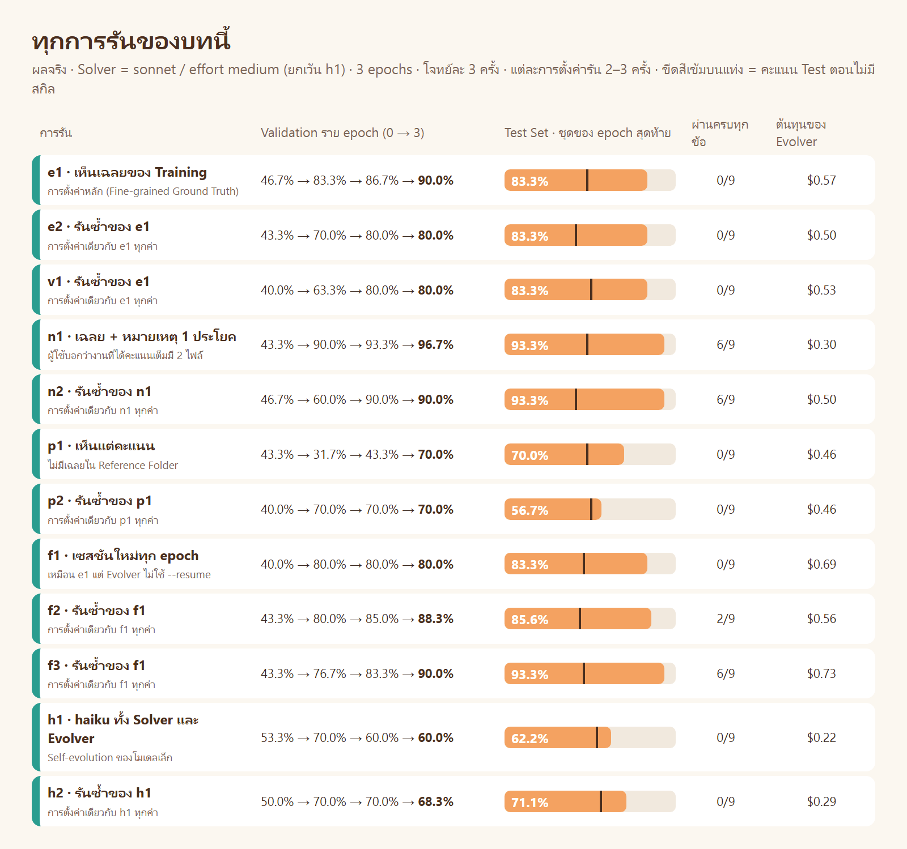
5 การรันแรกของแต่ละการตั้งค่า (e1 n1 p1 f1 h1) มาจากพรอมต์ของ LAB 1–6 · อีก 7 การรัน ผู้สอนรันซ้ำด้วยการตั้งค่าเดิม เพื่อดูว่าผลซ้ำได้แค่ไหน
Test Set ของชุดสกิลจาก epoch สุดท้าย: เห็นเฉลย · เฉลย + หมายเหตุ · เห็นแต่คะแนนruns/*/state.json
e1 · เห็นเฉลยของ Traininge2 · เห็นเฉลยของ Trainingv1 · เห็นเฉลยของ Trainingn1 · เฉลย + หมายเหตุ 1 ประโยคn2 · เฉลย + หมายเหตุ 1 ประโยคf1 · เซสชันใหม่ทุก epochf2 · เซสชันใหม่ทุก epochTest Set ของชุดสกิลจาก epoch สุดท้าย: เซสชันใหม่ทุก epoch · haiku ทั้ง Solver และ Evolverruns/*/state.json
f3 · เซสชันใหม่ทุก epochp1 · เห็นแต่คะแนนp2 · เห็นแต่คะแนนh1 · haiku ทั้ง Solver และ Evolverh2 · haiku ทั้ง Solver และ Evolverรวมทั้งบท: 12 การรัน = rollout ของ Solver 936 ครั้ง ($93.95) · README.md ข้อ 4.1
ชุดสกิลของแต่ละการรันผ่านข้อตรวจใด · Test Set
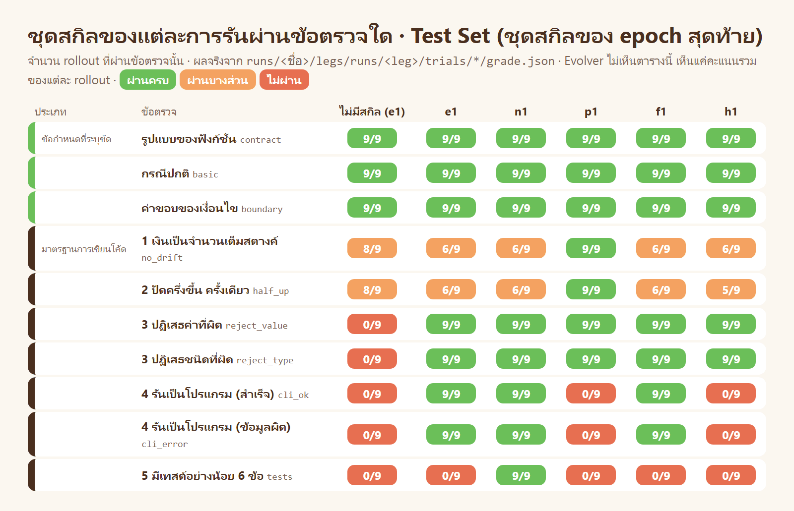
นโยบายเงินคืนที่เขียนกว้างทำให้ x2-refund ผิดในเกือบทุกการรัน · ข้อ tests ผ่านเฉพาะการรันที่ Solver ส่งไฟล์เทสต์ครบเกณฑ์
Test Set 3 ข้อ: EvoSkill v2 ได้ต่ำกว่าบท 05 และ 06 ทั้งที่เห็นเฉลย
คะแนน Test Set · บท 05: 100.0% (9/9) · บท 06: w1 100.0% (9/9) · บทนี้: เห็นเฉลย: 83.3% ทั้ง 3 การรัน
แรงที่ใช้ปรับสกิล: 3 บท 3 วิธี
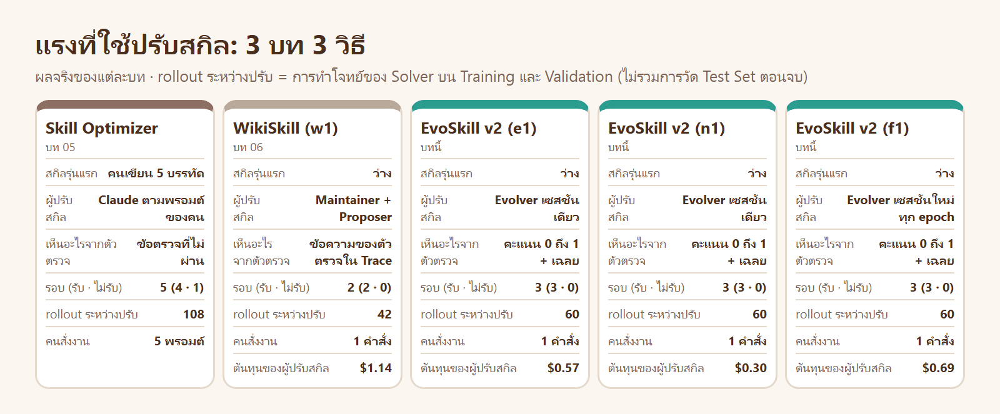
สิ่งที่คนทำ · บท 05: เขียน v0 · 5 พรอมต์ · อ่านผลทุกรอบ · บท 06: 1 พรอมต์ต่อการรัน · ตอบนโยบาย 4 ข้อ · บทนี้: เขียนคำสั่ง 1 หน้า + ตัวตรวจ · 1 พรอมต์ต่อการรัน
ทำไมได้ต่ำกว่าสองบทก่อน: 2 สาเหตุ และทั้งสองมาจากการออกแบบโดยตั้งใจ
ซ้าย · สาเหตุที่ 1 · กฎที่อยู่เฉพาะในตัวตรวจ ถูกส่งมาเป็นตัวเลขเดียว · ขวา · สาเหตุที่ 2 · ความรู้ที่ได้จากเฉลย ถูกขยายเกินหลักฐาน และไม่มีขั้นตัดสิน
สาเหตุที่ 1 · กฎที่อยู่เฉพาะในตัวตรวจ ถูกส่งมาเป็นตัวเลขเดียวตารางหลัก
| บท 05 และ 06 | EvoSkill v2 | |
|---|---|---|
| เมื่อ Solver ส่งเทสต์ 3 ข้อ ผู้ปรับสกิลเห็นอะไร | ✗ tests: unittest พบ 3 เทสต์ (ต้องมีอย่างน้อย 6) | 0.9 |
| สิ่งที่ต้องทำเพื่อรู้กฎข้อนี้ | อ่าน | ตั้งสมมติฐานจากเฉลย แล้วใช้ 1 epoch ทดสอบ |
| ถ้าเดาผิดทาง | – | คะแนนยังเป็น 0.9 เท่าเดิม แยกไม่ออก (e1) |
สาเหตุที่ 2 · ความรู้ที่ได้จากเฉลย ถูกขยายเกินหลักฐาน และไม่มีขั้นตัดสินงานคืนเงินคอร์สของ Test Set
ไม่มีประตูรับ · Validation ไม่มีงานแบบนี้ → ใช้จนถึง Test
w1p)ประตูรับของบท 05 ปฏิเสธ → เขียนใหม่แบบมีขอบเขต (w1q 100%)
เทียบ 3 วิธีบนโจทย์เดียวกันตารางหลัก
| ประเด็น | Skill Optimizer (บท 05) | WikiSkill (บท 06) | EvoSkill v2 (บทนี้) |
|---|---|---|---|
| นโยบายธุรกิจ 4 ข้อ | คนบอกใน LAB 3 | ค้นพบเองไม่ได้ (policy 0/6) · คนตอบใน LAB 5 | ค้นพบเองจากเฉลยของ Training ใน 7 จาก 8 การรันของ sonnet ที่เห็นเฉลย (policy ผ่าน 6/6 ภายใน epoch 2) · แต่กฎปัดเศษถูกเขียนกว้างจนงานอื่นผิด |
| ผู้ปรับสกิลเห็นอะไรจากตัวตรวจ | ข้อความของข้อที่ไม่ผ่าน | ข้อความของข้อที่ไม่ผ่าน | คะแนนอย่างเดียว |
| สิ่งที่กันสกิลที่ทำงานอื่นพัง | ประตูรับที่คิดความแกว่ง | Gate ของ WikiSkill · ประตูรับของบท 05 ใน LAB 5 (ปฏิเสธ w1p) | ไม่มี · ชุดสกิลของทุก epoch ถูกใช้ |
| สิ่งที่คนทำ | เขียน v0 · 5 พรอมต์ · อ่านผลทุกรอบ | 1 พรอมต์ต่อการรัน · ตอบนโยบาย 4 ข้อ | เขียนคำสั่ง 1 หน้า + ตัวตรวจ · 1 พรอมต์ต่อการรัน |
| ความรู้ที่เหลือหลังปรับ | ISSUES.md | wiki/ ที่มีโครงสร้าง | เท่าที่ Evolver จดเอง (ส่วนใหญ่ notes.md ไฟล์เดียว) + actions.md ของทุกตา |
README.md ข้อ 4.2คำตอบของคำถาม 7 ข้อ จากผลจริงผล LAB 1–7
1เริ่มจากไม่มีสกิล Evolver เขียนสกิลที่ใช้ได้หรือไม่
ได้: Test 41–50% → 83.3% ใน 3 จาก 3 การรัน ด้วย Evolver 3 ตา $0.50–$0.57 · แต่ไม่มี rollout ใดผ่านครบทุกข้อ
2ค้นพบนโยบายธุรกิจจากเฉลยได้หรือไม่
ได้ และเร็ว (ตาแรกใน 6 จาก 8 การรัน) · แต่กฎ "เงินคืนปัดลง" ถูกเขียนเป็นกฎของเงินที่ร้านจ่ายออกทุกชนิด งานคืนเงินคอร์สจึงผิดทุกการรัน
3กฎที่อยู่เฉพาะในตัวตรวจ ผู้ใช้บอกได้ทางใด
ผ่านโฟลเดอร์ reference: 1 ประโยคว่า "งานที่ได้คะแนนเต็มมี 2 ไฟล์" ทำให้ Test เป็น 93.3% ทั้ง 2 การรัน
4เห็นแต่คะแนน ผลต่างกันอย่างไร
Test 70.0% และ 56.7% · ค้นพบได้เฉพาะสิ่งที่ Solver บางตัวบังเอิญทำ (ตรวจ input) · ชุดสุดท้ายของ p2 ยังเป็นการทดลองที่ค้างอยู่
5ตัดความจำของเซสชัน ผลต่างกันอย่างไร
ไม่แย่ลง: 83.3% 85.6% 93.3% เทียบกับเซสชันเดียว 83.3% ทั้ง 3 การรัน · Evolver จดโน้ตให้ตัวเองแทน
6โมเดลเล็กปรับสกิลของตัวเองได้หรือไม่
ได้บางส่วน: +8.9 และ +15.6 จุด (sonnet +33 ถึง +42 จุด) · ไม่พบโหมดรันเป็นโปรแกรม และไม่เขียนนโยบายลงสกิล
7ทำไมไม่ใช้ประตูรับ และมีราคาเท่าไร
ประตูรับแบบวัดครั้งเดียวตัดสินชุดสกิลที่ เหมือนกันทุกไบต์ ต่างกันได้ (n1) · ราคาคือชุดที่เดาผิดถูกใช้ทั้ง epoch (p1 epoch 1) และความผิดที่ Validation มองไม่เห็นไปถึง Test
สิ่งที่ผลจริงสอน
p1 70.0% กับ p2 56.7%) ผลต่างระหว่างการตั้งค่าจึงยังไม่ใช่ข้อสรุปทางสถิติบทเรียนจากการตั้งค่าอื่น: เซสชันใหม่ · โมเดลเล็ก · ชุดที่เดาผิด · เครื่องวัดผล LAB 4–6 และ LAB 0
6เซสชันใหม่ทุก epoch (f1 f2 f3) ไม่แย่กว่าเซสชันเดียว
ในงานเล็ก ไฟล์โน้ตแทนความจำของเซสชันได้ · ข้ออ้างของเปเปอร์มาจากงานที่ใหญ่กว่านี้มาก
7haiku: h1 62.2% · h2 71.1%
โมเดลเล็กวิเคราะห์เป็นระบบ (เขียนสคริปต์ ใช้ซ้ำข้ามตา) แต่ตัดสินใจระวังกว่า: ไม่ใส่สิ่งที่โจทย์ไม่ได้เขียน
8p1 epoch 1: Validation 43.3% → 31.7% และชุดนั้นถูกใช้ทั้ง epoch
"รับทุก epoch" ใช้ epoch เป็นการทดลอง · ดีเมื่อมีตาถัดไป และมีราคาเมื่อชุดที่เดาผิดถูกใช้งานจริง
9LAB 0: บัญชี 1 ใน 3 ติดลิมิต แล้ว rollout ที่ไม่ได้รันถูกนับเป็นคะแนน 0
เครื่องมือวัดต้องแยก "Solver ทำผิด" ออกจาก "Solver ไม่ได้ทำ" · ตรวจเครื่องวัดก่อนเชื่อตัวเลข
เลือกใช้เมื่อไร
1Skill Optimizer
เมื่อ มีคนที่รู้กฎของงาน และต้องคุมขนาดกับต้นทุนของสกิล
เริ่มจากความรู้ของคน · มีรอบลดต้นทุน · ทุกการแก้มีคนเห็น
2WikiSkill
เมื่อ ต้องการความรู้ที่อ่านย้อนได้เป็นระบบ และงานต้องปรับหลายรอบ
Wiki สะสมข้ามรอบและมีโครงสร้าง · จดไว้ด้วยว่าเรื่องใดยังไม่ยืนยัน
3EvoSkill v2
เมื่อ มีตัวตรวจและเฉลยอ้างอิงอยู่แล้ว ต้องการให้ระบบทำเองทั้งหมด และงานต้องการการทดลองจริง (เปิดไฟล์ รันโค้ด เทียบผล)
Evolver ทดสอบคำอธิบายได้เอง และหาความรู้จากเฉลยได้ · คนทำแค่เขียนคำสั่ง 1 หน้า
4EvoSkill v2 แล้วตามด้วยประตูรับของบท 05
เมื่อ เฉลยอ้างอิงมีกฎเฉพาะงานปนอยู่
Evolver พบกฎได้ แต่ขยายเกินหลักฐานได้ ต้องมีชุดโจทย์ที่ไม่ได้ใช้ตอนปรับมาตัดสิน
5ยังไม่ควรใช้วิธีอัตโนมัติวิธีใด
เมื่อ ตัวตรวจยังไม่น่าเชื่อถือ หรือมีช่องโหว่
ผู้ปรับสกิลจะปรับเข้าหาช่องโหว่ (ทฤษฎี ขั้น 8)
แบบฝึกหัด 7 ข้อ
1อ่านผลและดูว่า Evolver ทดสอบสมมติฐานอย่างไร (ไม่ใช้โทเคน)
ใช้สกิล evoskill ดู status ของ runs/e1 และ noise ของ runs/n1 บนเครื่อง แล้วเปิด runs/e1/turns/turn_2/actions.md
2เมื่อมี epoch มากขึ้น การทดลองของ Evolver ได้ใช้ผลหรือไม่
คัดลอก bench/instruction_score_only.md เป็นไฟล์ใหม่ แก้เป็น 5 epochs · 3 samples per task แล้วรันการตั้งค่าของ p1
3Evolver ที่รู้ว่าเป็นตาสุดท้าย ยังทดลองหรือไม่
แก้ prompts/evolver_message.md ของสกิลให้บอกว่า "epoch นี้เป็น epoch สุดท้าย" เมื่อถึงตาสุดท้าย แล้วรันการตั้งค่าของ p1
4ข้อแลกเปลี่ยนของ "ทดสอบชุดสุดท้าย" กับ "เลือกตาม Validation" (ทฤษฎี ข้อ 11.4)
ใช้คำสั่ง eval วัด skills_v1 และ skills_v2 ของ p1 กับ Test Set แล้วเทียบกับ skills_v3
5เทียบสกิลของ 3 วิธีด้วยตัวรันเดียวกัน
ใช้คำสั่ง eval วัดสกิล v3 ของบท 05 (../05_Skill_Optimizer/runs/v3/skills) กับโจทย์ทุกชุดในการรัน e1
6ผู้ใช้กำกับขอบเขตของนโยบายผ่านโฟลเดอร์ reference ได้หรือไม่ (เพดาน 93.3%)
แก้ bench/instruction_with_note.md ให้หมายเหตุบอกเพิ่มว่า "กฎในเฉลยใช้กับฟังก์ชันนั้นเท่านั้น" แล้วรันการตั้งค่าของ n1
7ทำทั้งกระบวนการเอง เริ่มจากการตรวจตัวตรวจ
ใช้ EvoSkill v2 กับงานของตัวเอง: เขียนคำสั่ง 1 หน้า · ข้อมูล 4 + 2 + 2 ข้อ · ตัวตรวจ แล้วรัน
README.md ข้อ 4.6ข้อจำกัดของการทดลองนี้
1แต่ละการตั้งค่ารัน 2–3 ครั้ง
ผลของการตั้งค่าเดียวกันต่างกันได้ถึง 13 จุด (p1 70.0% กับ p2 56.7%) ผลต่างระหว่างการตั้งค่าจึงยังไม่ใช่ข้อสรุปทางสถิติ
2โจทย์เล็ก (Training 4 · Validation 2 · Test 3) และตาของ Evolver สั้น
ไม่มีการย่อบริบท ไม่มี subagent จึงยังไม่ได้เห็นประโยชน์ของเซสชันเดียวแบบที่เปเปอร์รายงาน
3นโยบายธุรกิจมีข้อตรวจเฉพาะใน Training 2 โจทย์
Validation และ Test ไม่ได้วัดว่าสกิลรู้นโยบายหรือไม่ วัดได้เพียงว่านโยบายที่เขียนกว้างทำงานอื่นผิดหรือไม่ (พบ 1 งาน คือ x2-refund)
4คะแนนเป็นสัดส่วนของข้อตรวจ 10–11 ข้อ ไม่ใช่ผ่านหรือไม่ผ่านแบบเปเปอร์
Evolver ของเราได้สัญญาณละเอียดกว่า (0.7 → 0.9)
5เครื่องมือและ prompt สร้างจากพรอมต์ของ LAB 0 ด้วยถ้อยคำของผู้สร้าง
ผู้เรียนที่สร้างเองจะได้ prompt ที่ต่างออกไป ตัวเลขจึงไม่ตรงกับบทนี้ทุกตัว · เครื่องมือที่ให้ผลในบทนี้เก็บไว้ที่ 00_resource/skills/evoskill
6เทียบกับบท 05 และ 06 ด้วยข้อมูลที่ผู้ปรับสกิลเห็นไม่เท่ากัน
คะแนนที่ต่างกันมาจากทั้งวิธีและข้อมูลที่เห็น (ข้อ 4.2)
README.md ข้อ 4.7อ่านต่อ
ทฤษฎีของบทนี้: 01_theory/README.md · สไลด์ของทฤษฎี
รูปแบบของเครื่องมือ: evoskill_format.md · เครื่องมือที่ให้ผลในบทนี้: ../../00_resource/skills/evoskill
รายละเอียดเต็มของบทนี้: README.md · ผลดิบ: runs/
โจทย์เดียวกัน ปรับสกิลด้วยวิธีอื่น: WikiSkill · Skill Optimizer